第三章 周期信号的傅里叶级数表示
目录
线性时不变系统对复指数信号的响应
回顾
| \(\mathbb{R}^{n}\) | DT 信号 \(\mathbb{C}^{\mathbb{Z}}\) | CT 信号 | |
|---|---|---|---|
| 基 (basis) | \(\left\{\mathbf{e}_{1}, \ldots, \mathbf{e}_{n}\right\}\) | \(\left\{\delta_{k}: k \in \mathbb{Z}\right\}\) | \(\left\{\delta_{\tau}: \tau \in \mathbb{R}\right\}^{1}\) |
| 一般信号 \(x\) | \(x=\sum_{k=1}^{n} x_{k} \mathbf{e}_{k}\) | \(x=\sum_{k \in \mathbb{Z}} x[k] \delta_{k}\) | \(x=\int_{\mathbb{R}} x(\tau) \delta_{\tau} d \tau\) |
| 线性变换下的像 | |||
| 基的像 | \(\left\{\mathbf{f}_{1}, \ldots, \mathbf{f}_{n}\right\}\) | \(\left\{h_{k}: k \in \mathbb{Z}\right\}\) | \(\left\{h_{\tau}: \tau \in \mathbb{R}\right\}\) |
| 一般信号 \(x\) 的像 | \(A x=\sum_{k=1}^{n} x_{k} \mathbf{f}_{k}\) | \(T(x)=\sum_{k \in \mathbb{Z}} x[k] h_{k}\) | \(T(x)=\int_{\mathbb{R}} x(\tau) h_{\tau} d \tau\) |
| LTI 系统 | - | \(T(x)=x * h\) | \(T(x)=x * h\) |
特征值与特征向量
在线性代数中，\(v \in \mathbb{R}^{n}\) 是矩阵 \(A\) 的特征向量 (eigenvector)，其对应的特征值 (eigenvalue) 为 \(\lambda\)，如果：
\[ A v=\lambda v \]
假设 \(A\) 有 \(n\) 个不同的特征值 \(\lambda_{1}, \ldots, \lambda_{n}\)，分别对应特征向量 \(v_{1}, \ldots, v_{n}\)。
- \(v_{1}, \ldots, v_{n}\) 构成 \(\mathbb{R}^{n}\) 的一组基，即 \(\forall x \in \mathbb{R}^{n}\) 都有以下表示：
\[ x=\sum_{k=1}^{n} a_{k} v_{k} \]
- \(x\) 在 \(A\) 作用下的像：
\[ A x=\sum_{k=1}^{n} a_{k} A v_{k}=\sum_{k=1}^{n} a_{k} \lambda_{k} v_{k} \]
基变换 (Change of Basis)
| 标准基 | \(A\) 的特征基 | |
|---|---|---|
| 基向量 | \(\left\{\mathbf{e}_{1}, \ldots, \mathbf{e}_{n}\right\}\) | \(\left\{v_{1}, \ldots, v_{n}\right\}\) |
| 分解 | \(x=\sum_{k=1}^{n} x_{k} \mathbf{e}_{k}\) | \(x=\sum_{k=1}^{n} a_{k} v_{k}\) |
| \(A\) 作用下的像 | \(A x=\sum_{k=1}^{n} x_{k} \mathbf{f}_{k}\) | \(A x=\sum_{k=1}^{n} a_{k} \lambda_{k} v_{k}\) |
\(x\) 和 \(A x\) 的展开：
- 在标准基下：系数 \(\left\{x_{k}\right\}\) 相同，基向量不同 \(\left\{\mathbf{e}_{k}\right\} \mapsto\left\{\mathbf{f}_{k}\right\}\)（卷积/叠加积分）
- 在特征基下：基向量 \(\left\{v_{k}\right\}\) 相同，系数不同 \(\left\{a_{k}\right\} \mapsto\left\{\lambda_{k} a_{k}\right\}\)（乘法）
基变换 (信号与系统)
| DT | 标准基 | 特征基 | |
|---|---|---|---|
| 基向量 | \(\left\{\delta_{k}: k \in \mathbb{Z}\right\}\) | \(z^n\) | |
| 分解 | \(x=\sum_{k \in \mathbb{Z}} x[k] \delta_{k}\) | 傅里叶/Z 变换 | |
| \(T\) 作用下的像 | \(T(x)=\sum_{k \in \mathbb{Z}} x[k] h_{k}\) | \(H(z) z^n\) | |
| CT | “标准基” | 特征基 | |
| 基向量 | \(\left\{\delta_{\tau}: \tau \in \mathbb{R}\right\}\) | \(e^{st}\) | |
| 分解 | \(x=\int_{\mathbb{R}} x(\tau) \delta_{\tau} d \tau\) | 傅里叶/拉普拉斯变换 | |
| \(T\) 作用下的像 | \(T(x)=\int_{\mathbb{R}} x(\tau) h_{\tau} d \tau\) | \(H(s) e^{st}\) |
LTI 系统的特征值与特征函数
CT 指数信号 \(e^{s t}\)
\[ T\left(e^{s t}\right)=\int_{\mathbb{R}} h(\tau) e^{s(t-\tau)} d \tau=e^{s t} \int_{\mathbb{R}} h(\tau) e^{-s \tau} d \tau, \]
\(e^{s t}\) 是 \(T\) 的特征函数，对应的特征值为：
\[ H(s)=\int_{\mathbb{R}} h(\tau) e^{-s \tau} d \tau \quad \text { (系统函数) } \]
DT 指数信号 \(z^{n}\)
\[ T\left(z^{n}\right)=\sum_{k \in \mathbb{Z}} h[k] z^{n-k}=z^{n} \sum_{k \in \mathbb{Z}} h[k] z^{-k}, \]
\(z^{n}\) 是 \(T\) 的特征函数，对应的特征值为：
\[ H(z)=\sum_{k \in \mathbb{Z}} h[k] z^{-k} \quad \text { (系统函数) } \]
对特征函数线性组合的响应
CT (连续时间)
\[ T\left(\sum_{k} a_{k} e^{s_{k} t}\right)=\sum_{k} a_{k} H\left(s_{k}\right) e^{s_{k} t} \]
DT (离散时间)
\[ T\left(\sum_{k} a_{k} z_{k}^{n}\right)=\sum_{k} a_{k} H\left(z_{k}\right) z_{k}^{n} \]
输入 vs. 输出
- 相同的指数函数的线性组合
- 系数发生变化：\(\left\{a_{k}\right\} \mapsto\left\{H\left(s_{k}\right) a_{k}\right\} /\left\{H\left(z_{k}\right) a_{k}\right\}\)
问题
- 哪些函数可以是指数函数的线性组合？
- 如何找到系数 \(a_{k}\)？
傅里叶分析重点关注 CT 中的 \(e^{j \omega t}\) 和 DT 中的 \(e^{j \omega n}\)。
2. 连续时间 (CT) 傅里叶级数
CT 傅里叶级数
回顾：CT 信号是周期的，周期为 \(T\)，如果：
\[ x=\tau_{T} x \quad \text { 或 } \quad x(t)=x(t+T), \forall t \in \mathbb{R} \]
- 基波周期 \(T\)：最小的正周期
- 基波频率 \(\omega_{0}=\frac{2 \pi}{T}\)
\(\sin \left(\omega_{0} t\right), \cos \left(\omega_{0} t\right), e^{j \omega_{0} t}\) 都是基频为 \(\omega_{0}\) 的周期信号。 傅里叶级数用谐波相关 (harmonically related) 的正弦波或复指数信号表示周期信号：
\[ \begin{aligned} & x(t)=a_{0}+\sum_{k=1}^{\infty}\left[a_{k} \cos \left(k \omega_{0} t\right)+b_{k} \sin \left(k \omega_{0} t\right)\right] \\ & x(t)=\sum_{k=-\infty}^{\infty} c_{k} e^{j k \omega_{0} t} \end{aligned} \]
约瑟夫·傅里叶 (Joseph Fourier)
1807, Mémoire sur la propagation de la chaleur dans les corps solides (关于热在固体中传播的论文)
1822, Théorie analytique de la chaleur (热的解析理论)
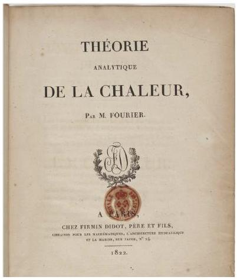
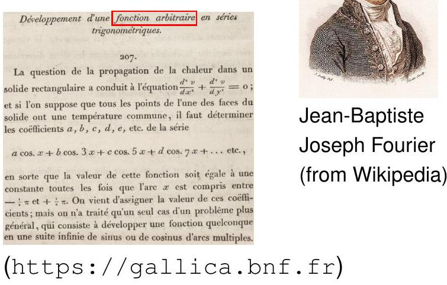
谐波 (Harmonics)
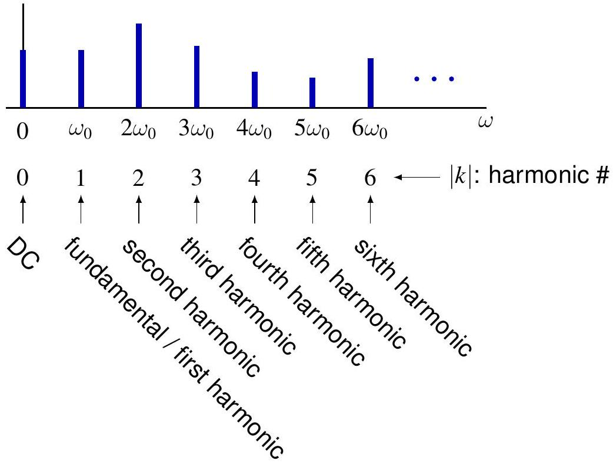
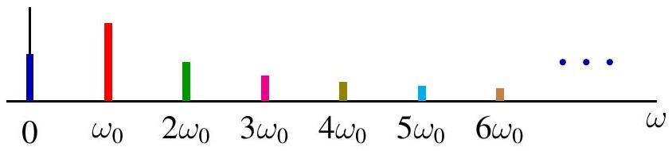
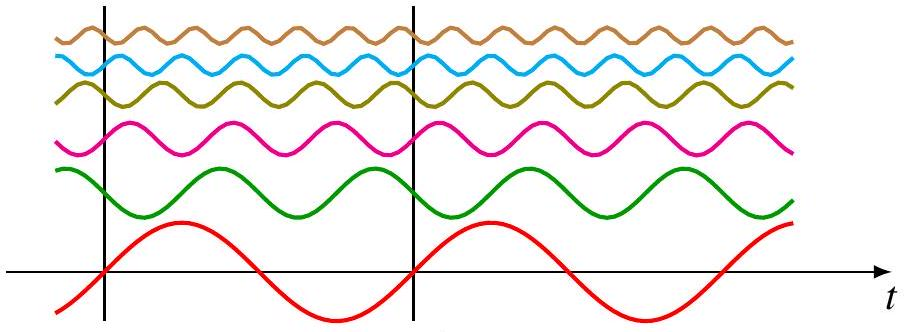
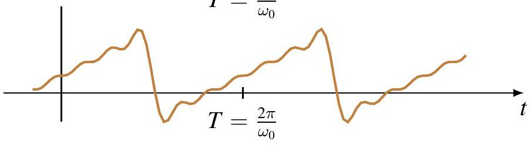
谐波的正交归一性 (Orthonormality)
回顾对于 \(k \neq 0\)，
\[ \int_{a}^{b} e^{j k \omega_{0} t} d t=\frac{e^{j k \omega_{0} b}-e^{j k \omega_{0} a}}{j k \omega_{0}} \]
由于 \(e^{j k \omega_{0} t}\) 具有周期 \(T\)，在任意一个周期内：
\[ \frac{1}{T} \int_{T} e^{j k \omega_{0} t} d t=\frac{1}{T} \int_{t_{0}}^{t_{0}+T} e^{j k \omega_{0} t} d t=\delta[k] \]
定义两个周期为 \(T\) 的信号的内积 (inner product) 为：
\[ \langle f, g\rangle=\frac{1}{T} \int_{T} f(t) \overline{g(t)} d t \]
\(\left\{e^{j k \omega_{0} t}: k \in \mathbb{Z}\right\}\) 是一个正交归一的函数系：
\[ \left\langle e^{j k \omega_{0} t}, e^{j m \omega_{0} t}\right\rangle=\frac{1}{T} \int_{T} e^{j(k-m) \omega_{0} t} d t=\delta_{k m}=\delta[k-m] \]
谐波的正交性 (Orthogonality)
对于正弦和余弦函数：
\[ \begin{aligned} & \left\langle\sin \left(k \omega_{0} t\right), \sin \left(m \omega_{0} t\right)\right\rangle=\frac{1}{2} \delta[k-m]-\frac{1}{2} \delta[k+m] \\ & \left\langle\cos \left(k \omega_{0} t\right), \cos \left(m \omega_{0} t\right)\right\rangle=\frac{1}{2} \delta[k-m]+\frac{1}{2} \delta[k+m] \\ & \left\langle\sin \left(k \omega_{0} t\right), \cos \left(m \omega_{0} t\right)\right\rangle=0 \end{aligned} \]
证明： 使用欧拉公式和 \(\left\{e^{i k \omega_{0} t}: k \in \mathbb{Z}\right\}\) 的正交归一性。
谐波的正交性 (图示)
\[ \begin{gathered} \sin \left(\omega_{0} t\right) \\ \sin \left(2 \omega_{0} t\right) \end{gathered} \]
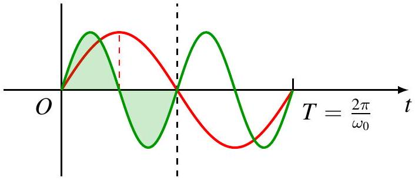
\[ \begin{aligned} & \sin \left(\omega_{0} t\right) \\ & \cos \left(\omega_{0} t\right) \end{aligned} \]
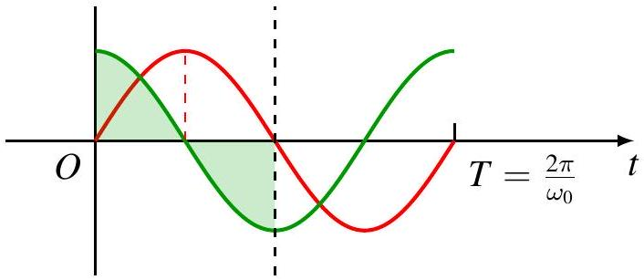
傅里叶系数 (Fourier Coefficients)
假设 \(x\) 周期为 \(T\) 且有傅里叶级数表示：
\[ x(t)=\sum_{k=-\infty}^{\infty} c_{k} e^{j k \omega_{0} t}, \quad \omega_{0}=\frac{2 \pi}{T} \]
利用 \(\left\{e^{j k \omega_{0} t}\right\}\) 的正交归一性求解傅里叶系数：
\[ \begin{aligned} \left\langle x, e^{j m \omega_{0} t}\right\rangle & =\left\langle\sum_{k=-\infty}^{\infty} c_{k} e^{j k \omega_{0} t}, e^{j m \omega_{0} t}\right\rangle \\ & =\sum_{k=-\infty}^{\infty} c_{k}\left\langle e^{j k \omega_{0} t}, e^{j m \omega_{0} t}\right\rangle \\ & =\sum_{k=-\infty}^{\infty} c_{k} \delta[m-k]=c_{m} \end{aligned} \]
复数傅里叶级数
综合方程 (Synthesis equation)
\[ x(t)=\sum_{k=-\infty}^{\infty} \hat{x}[k] e^{j k \omega_{0} t}=\sum_{k=-\infty}^{\infty} \hat{x}[k] e^{j k \frac{2 \pi}{T} t} \]
\(N\) 次部分和： \[ S_{N}(x)(t)=\sum_{k=-N}^{N} \hat{x}[k] e^{i k \omega_{0} t} \]
分析方程 (Analysis equation)
\[ \hat{x}[k]=\left\langle x, e^{j k \omega_{0} t}\right\rangle=\frac{1}{T} \int_{T} x(t) e^{-j k \omega_{0} t} d t=\frac{1}{T} \int_{T} x(t) e^{-j k \frac{2 \pi}{T} t} d t \]
三角傅里叶级数
对于正弦和余弦： * 正弦与正弦正交 * 余弦与余弦正交 * 正弦与余弦正交
综合方程
\[ x(t)=a_{0}+\sum_{k=1}^{\infty}\left[a_{k} \cos \left(k \omega_{0} t\right)+b_{k} \sin \left(k \omega_{0} t\right)\right] \]
分析方程
\[ a_{k}=\frac{2-\delta[k]}{T} \int_{T} x(t) \cos \left(k \omega_{0} t\right) d t, \quad b_{k}=\frac{2}{T} \int_{T} x(t) \sin \left(k \omega_{0} t\right) d t \]
两种形式的等价性
复数形式 \[ x(t)=\sum_{k=-\infty}^{\infty} \hat{x}[k] e^{j k \omega_{0} t} \]
三角形式 \[ x(t)=a_{0}+\sum_{k=1}^{\infty}\left[a_{k} \cos \left(k \omega_{0} t\right)+b_{k} \sin \left(k \omega_{0} t\right)\right] \]
系数转换 (通过欧拉公式)
\[ \left\{\begin{array}{ll} a_{0}=\hat{x}[0] \\ a_{k}=\hat{x}[k]+\hat{x}[-k], \\ b_{k}=j(\hat{x}[k]-\hat{x}[-k]), \end{array} \quad k \geq 1 \quad k \geq 1 \quad \begin{cases}\hat{x}[0]=a_{0} \\ \hat{x}[k]=\frac{1}{2}\left(a_{k}-j b_{k}\right), & k \geq 1 \\ \hat{x}[k]=\frac{1}{2}\left(a_{k}+j b_{-k}\right), & k \leq-1\end{cases}\right. \]
复数形式中的负频率是为了数学上的方便引入的，没有直接的物理意义。
例子
例子：\(x(t)=e^{j \omega_{0} t}, \hat{x}[k]=\delta[k-1]\) 频谱 \(\hat{x}[k]\)
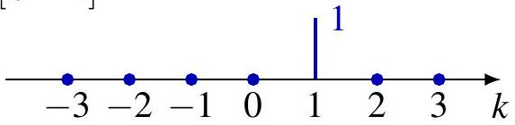
例子：\(x(t)=\cos \left(\omega_{0} t+\phi\right)=\frac{e^{i \phi}}{2} e^{j \omega_{0} t}+\frac{e^{-j \phi}}{2} e^{-j \omega_{0} t}\)，
\[ \hat{x}[1]=\frac{1}{2} e^{j \phi}, \quad, \hat{x}[-1]=\frac{1}{2} e^{-j \phi}, \quad \hat{x}[k]=0, k \neq \pm 1 \]
幅度谱 \(|\hat{x}[k]|\)
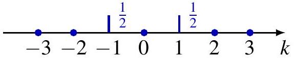
相位谱 \(\arg \hat{x}[k]\)
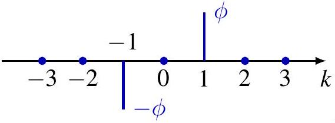
例子：三角波 (Triangle Wave)
在一个周期内，
\[ x(t)=1-\frac{2|t|}{T}, \quad|t| \leq \frac{T}{2} \]
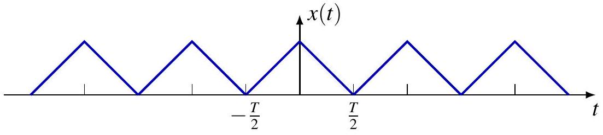
傅里叶系数：
\[ k=0, \quad \hat{x}[0]=\frac{1}{T} \int_{-T / 2}^{T / 2}\left(1-\frac{2|t|}{T}\right) d t=\frac{1}{2} \]
\(k \neq 0, k\) 为奇数,\(\quad \hat{x}[k]=\frac{1}{T} \int_{-T / 2}^{T / 2}\left(1-\frac{2|t|}{T}\right) e^{-j k \omega_{0} t} d t=\frac{2}{\pi^{2} k^{2}}\) \(k \neq 0, k\) 为偶数, \(\quad \hat{x}[k]=0\)
例子：三角波频谱
\[ \hat{x}[k]= \begin{cases}\frac{1}{2}, & k=0 \\ \frac{2}{\pi^{2} k^{2}}, & k \neq 0 \text { 奇数 } \\ 0, & k \neq 0 \text { 偶数 }\end{cases} \]
固定 \(T\) 的频谱，频率间隔 \(\Delta \omega=\frac{2 \pi}{T} \omega_{k}=k \frac{2 \pi}{T}\)
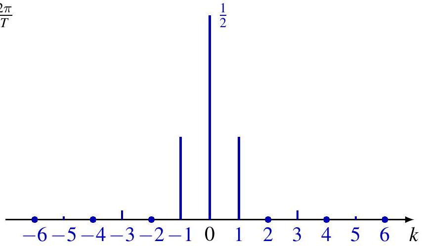
例子：三角波合成 (\(N=0\))
\[ S_{0}(x)(t)=\sum_{k=-0}^{0} \hat{x}[k] e^{j k \omega_{0} t} \]
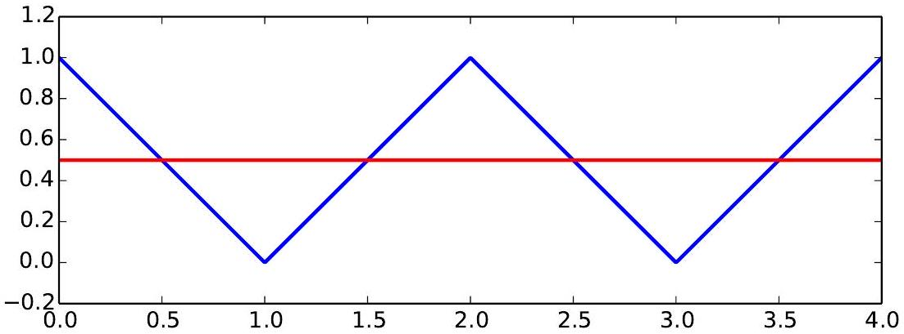
例子：三角波合成 (\(N=1\))
\[ S_{1}(x)(t)=\sum_{k=-1}^{1} \hat{x}[k] e^{j k \omega_{0} t} \]
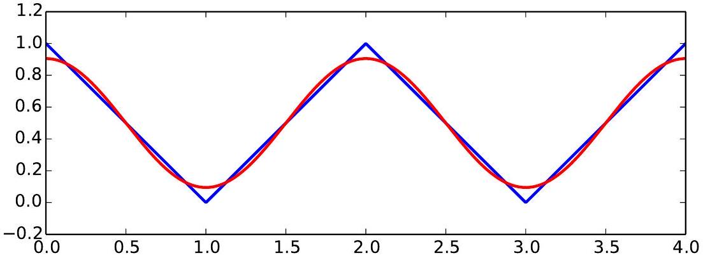
例子：三角波合成 (\(N=3\))
\[ S_{3}(x)(t)=\sum_{k=-3}^{3} \hat{x}[k] e^{j k \omega_{0} t} \]
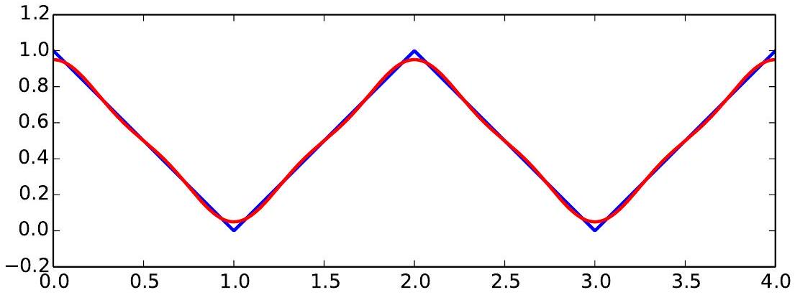
例子：三角波合成 (\(N=5\))
\[ S_{5}(x)(t)=\sum_{k=-5}^{5} \hat{x}[k] e^{j k \omega_{0} t} \]
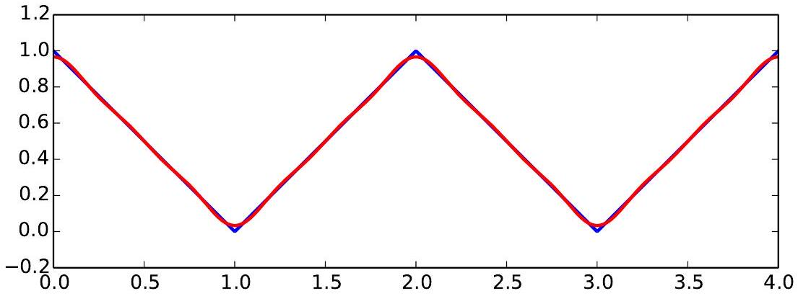
例子：三角波合成 (\(N=7\))
\[ S_{7}(x)(t)=\sum_{k=-7}^{7} \hat{x}[k] e^{j k \omega_{0} t} \]
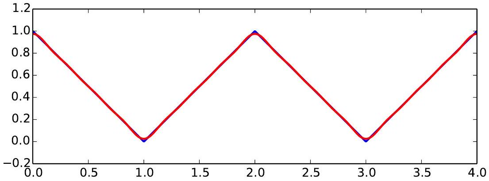
例子：三角波合成 (\(N=9\))
\[ S_{9}(x)(t)=\sum_{k=-9}^{9} \hat{x}[k] e^{j k \omega_{0} t} \]
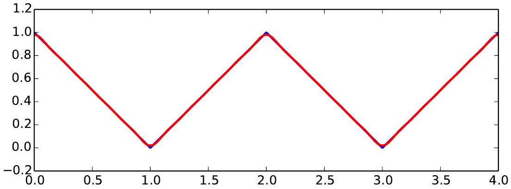
例子：三角波合成 (\(N=19\))
\[ S_{19}(x)(t)=\sum_{k=-19}^{19} \hat{x}[k] e^{j k \omega_{0} t} \]
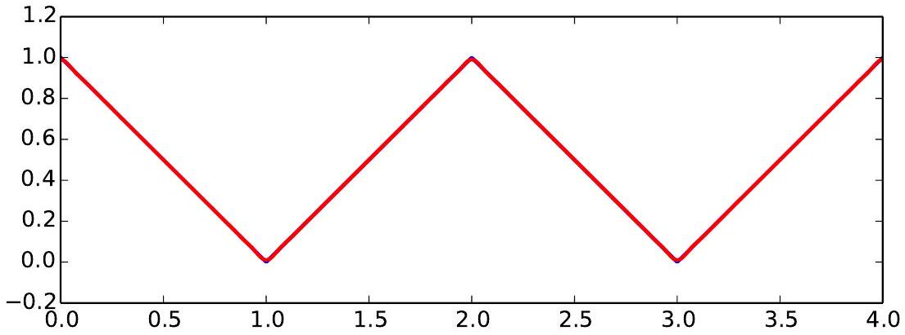
例子：周期方波 (Periodic Square Wave)
在一个周期内，
\[ x(t)= \begin{cases}1, & |t|<T_{1} \\ 0, & T_{1}<|t|<T / 2\end{cases} \]
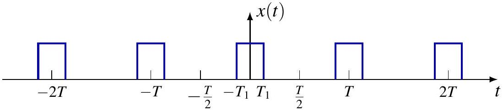
傅里叶系数：
\[ \begin{array}{ll} k=0, & \hat{x}[0]=\frac{1}{T} \int_{-T_{1}}^{T_{1}} 1 d t=\frac{2 T_{1}}{T} \\ k \neq 0, & \hat{x}[k]=\frac{1}{T} \int_{-T_{1}}^{T_{1}} e^{-j k \omega_{0} t} d t=\frac{2 \sin \left(k \omega_{0} T_{1}\right)}{k \omega_{0} T}=\frac{\sin \left(k \omega_{0} T_{1}\right)}{k \pi} \end{array} \]
例子：周期方波频谱
\[ \hat{x}[k]=\frac{\sin \left(k \frac{2 \pi T_{1}}{T}\right)}{k \pi}=\frac{2 \sin \left(\omega_{k} T_{1}\right)}{\omega_{k} T} \]
固定 \(T\)，不同 \(T_{1}\) 的频谱：
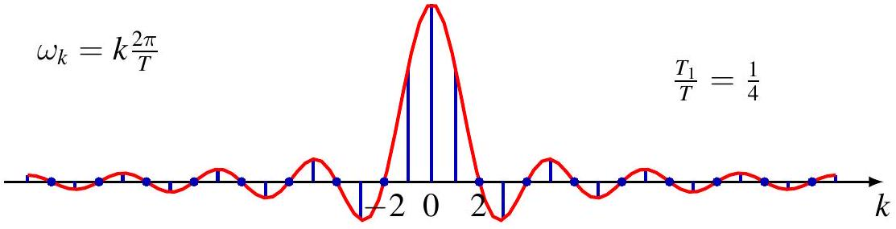
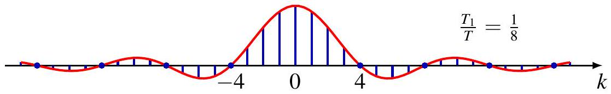
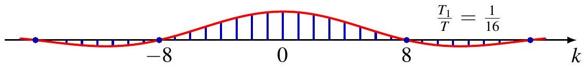
例子：周期方波频谱 (不同 \(T\))
\[ \hat{x}[k]=\frac{\sin \left(k \frac{2 \pi T_{1}}{T}\right)}{k \pi}=\frac{2 \sin \left(\omega_{k} T_{1}\right)}{\omega_{k} T} \]
固定 \(T_{1}\)，不同 \(T\) 的频谱：
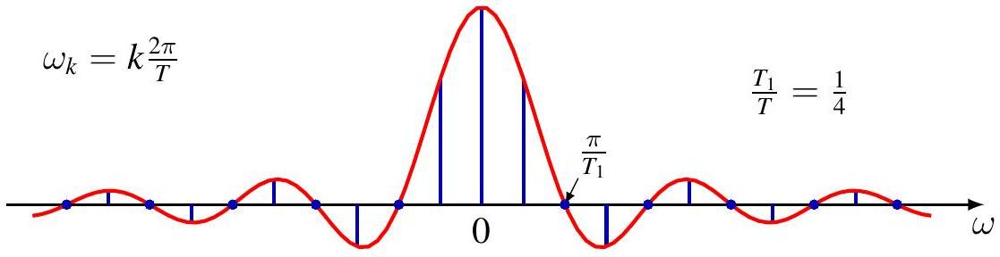
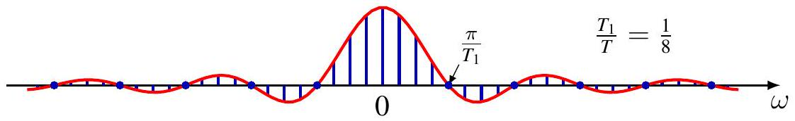
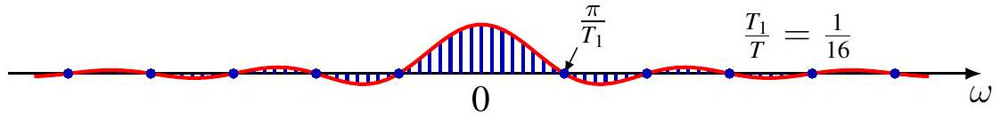
例子：方波合成 (\(N=0\))
\[ S_{0}(x)(t)=\sum_{k=-0}^{0} \hat{x}[k] e^{j k \omega_{0} t} \]
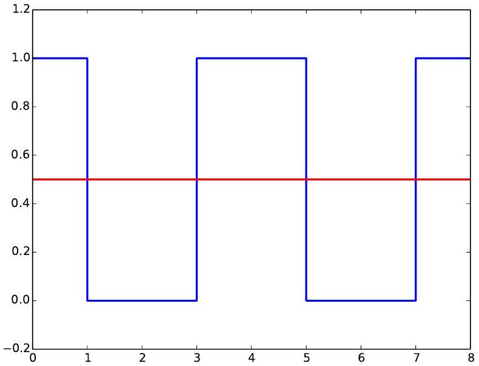
例子：方波合成 (\(N=1\))
\[ S_{1}(x)(t)=\sum_{k=-1}^{1} \hat{x}[k] e^{j k \omega_{0} t} \]
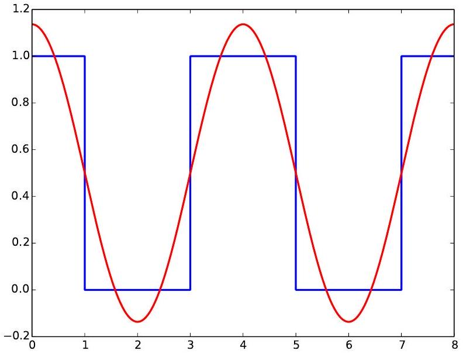
例子：方波合成 (\(N=3\))
\[ S_{3}(x)(t)=\sum_{k=-3}^{3} \hat{x}[k] e^{j k \omega_{0} t} \]
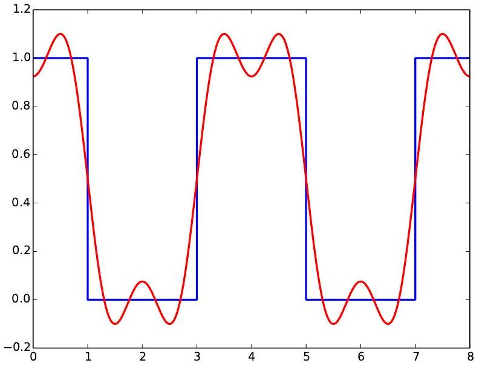
例子：方波合成 (\(N=5\))
\[ S_{5}(x)(t)=\sum_{k=-5}^{5} \hat{x}[k] e^{j k \omega_{0} t} \]
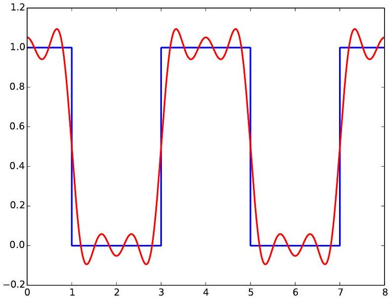
例子：方波合成 (\(N=7\))
\[ S_{7}(x)(t)=\sum_{k=-7}^{7} \hat{x}[k] e^{j k \omega_{0} t} \]
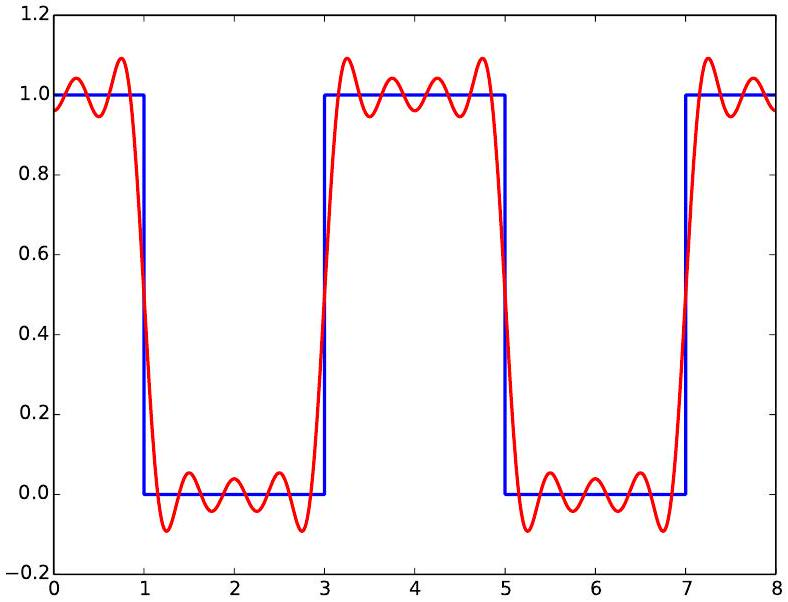
例子：方波合成 (\(N=9\))
\[ S_{9}(x)(t)=\sum_{k=-9}^{9} \hat{x}[k] e^{j k \omega_{0} t} \]
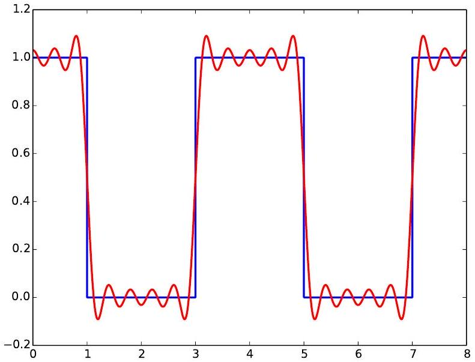
例子：方波合成 (\(N=13\))
\[ S_{13}(x)(t)=\sum_{k=-13}^{13} \hat{x}[k] e^{j k \omega_{0} t} \]
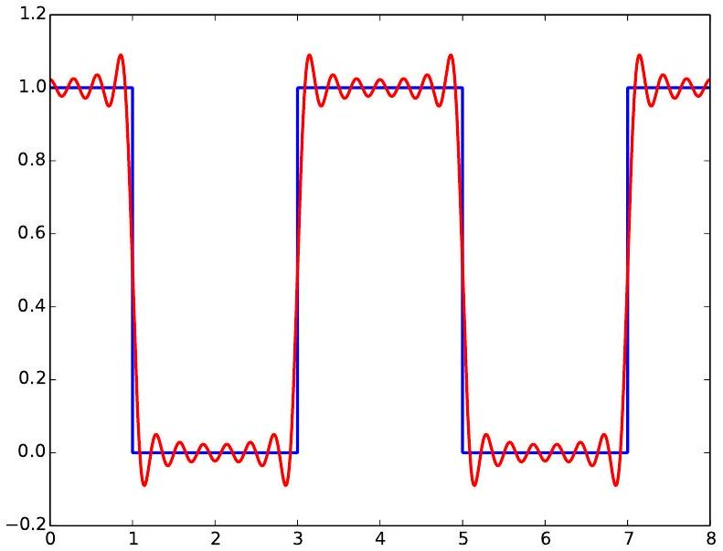
例子：方波合成 (\(N=19\))
\[ S_{19}(x)(t)=\sum_{k=-19}^{19} \hat{x}[k] e^{j k \omega_{0} t} \]
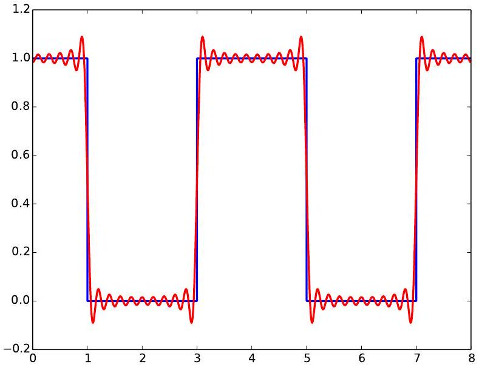
例子：方波合成 (\(N=29\))
\[ S_{29}(x)(t)=\sum_{k=-29}^{29} \hat{x}[k] e^{j k \omega_{0} t} \]
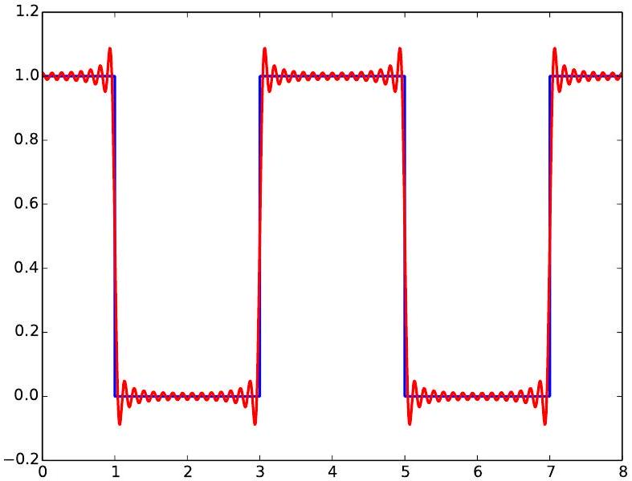
例子：方波合成 (\(N=39\))
\[ S_{39}(x)(t)=\sum_{k=-39}^{39} \hat{x}[k] e^{j k \omega_{0} t} \]
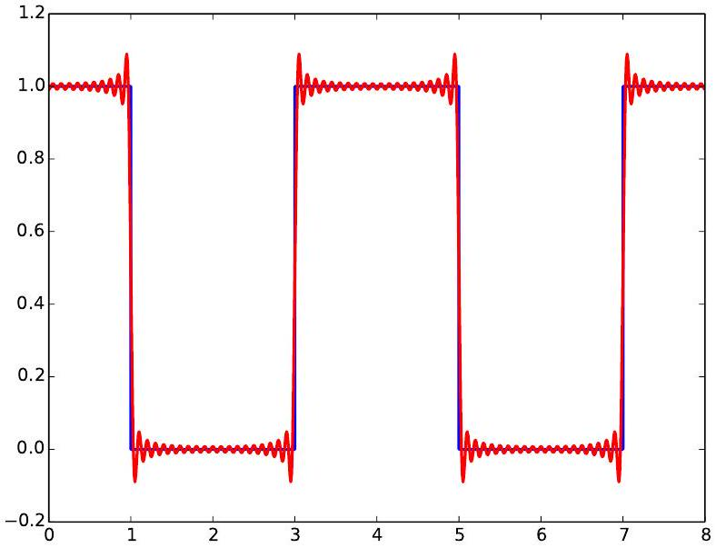
吉布斯现象 (Gibbs Phenomenon)
傅里叶级数的部分和在跳变间断点处“振铃”
- 随着项数增加，过冲越来越靠近间断点
- 过冲幅度趋近于跳变幅度的 \(\approx 9 \%\)
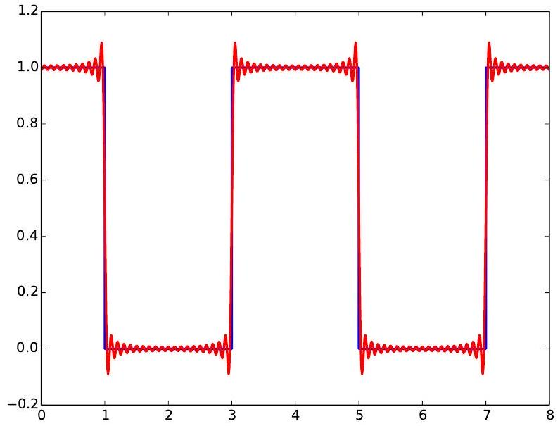
3. 连续时间傅里叶级数的性质
CT 傅里叶级数的性质
傅里叶级数建立了周期函数与双无限序列之间的对应关系：
\[ x \stackrel{\mathcal{F S}}{\longleftrightarrow} \hat{x} \quad \text { 或 } \quad x(t) \stackrel{\mathcal{F S}}{\longleftrightarrow} \hat{x}[k] \]
线性 (Linearity) 如果 \(x, y\) 具有相同的周期 \(T\)，那么它们的线性组合 \(a x+b y\) 也是，并且：
\[ \widehat{a x+b y}=a \hat{x}+b \hat{y} \]
证明：
\[ \begin{aligned} (\widehat{a x+b y})[k] & =\left\langle a x+b y, e^{j k \omega_{0} t}\right\rangle \\ & =a\left\langle x, e^{j k \omega_{0} t}\right\rangle+b\left\langle y, e^{j k \omega_{0} t}\right\rangle \\ & =a \hat{x}[k]+b \hat{y}[k] \end{aligned} \]
CT 傅里叶级数的性质
时移 (Time shifting) 如果 \(x\) 周期为 \(T\) 且 \(\omega_{0}=\frac{2 \pi}{T}\)，
\[ \widehat{\tau_{t_{0}} x}=E_{-\omega_{0} t_{0}} \hat{x} \quad \text { 或 } \quad x\left(t-t_{0}\right) \stackrel{\mathcal{F S}}{\longleftrightarrow} e^{-j k \omega_{0} t_{0}} \hat{x}[k] \]
其中 \(\left(E_{a} \hat{x}\right)[k]=e^{j a k} \hat{x}[k]\) 时移 ⟺ 频率上的线性相位变化
证明：
\[ \begin{aligned} \left(\widehat{\tau_{t_{0}}} x\right)[k] & =\left\langle\tau_{t_{0}} x, e^{j k \omega_{0} t}\right\rangle=\left\langle x, \tau_{-t_{0}} e^{j k \omega_{0} t}\right\rangle \\ & =\left\langle x, e^{j k \omega_{0}\left(t+t_{0}\right)}\right\rangle=\left\langle x, e^{j k \omega_{0} t_{0}} e^{j k \omega_{0} t}\right\rangle \\ & =e^{-j k \omega_{0} t_{0}}\left\langle x, e^{j k \omega_{0} t}\right\rangle=e^{-j k \omega_{0} t_{0}} \hat{x}[k]=\left(E_{-\omega_{0} t_{0}} \hat{x}\right)[k] \end{aligned} \]
例子：\(\cos (t)=\frac{1}{2} e^{j t}+\frac{1}{2} e^{-j t}, \sin (t)=\cos \left(t-\frac{\pi}{2}\right)=\frac{-j}{2} e^{j t}+\frac{j}{2} e^{-j t}\)
傅里叶级数 (回顾)
周期为 \(T\) 且 \(\omega_{0}=\frac{2 \pi}{T}\) 的信号 \(x\) 的傅里叶级数：
\[ x(t)=\sum_{k=-\infty}^{\infty} \hat{x}[k] e^{j k \omega_{0} t} \]
周期函数与双无限序列之间的对应关系；时域 vs. 频域：
\[ x \stackrel{\mathcal{F S}}{\longleftrightarrow} \hat{x} \quad \text { 或 } \quad x(t) \stackrel{\mathcal{F S}}{\longleftrightarrow} \hat{x}[k] \]
- \(\hat{x}\) 由 \(x\) 在“基” \(\left\{e^{j k \omega_{0} t}\right\}\) 下的展开系数组成
- 仅凭 \(\hat{x}\) 不能唯一确定 \(x\)，
- 还需要知道基函数，或者等价地，知道周期 \(T\) 或基频 \(\omega_{0}\)
- 相同的系数配合不同的基（周期）会给出不同的函数（稍后详述）
1. CT 傅里叶级数的性质
线性 (Linearity)
如果 \(x, y\) 具有相同的周期 \(T\)，那么它们的线性组合 \(a x+b y\) 也是，并且：
\[ \widehat{a x+b y}=a \hat{x}+b \hat{y} \]
证明：
\[ \begin{aligned} (\widehat{a x+b y})[k] & =\left\langle a x+b y, e^{j k \omega_{0} t}\right\rangle \\ & =a\left\langle x, e^{j k \omega_{0} t}\right\rangle+b\left\langle y, e^{j k \omega_{0} t}\right\rangle \\ & =a \hat{x}[k]+b \hat{y}[k] \end{aligned} \]
另一种证明思路：
\[ \left.\begin{array}{l} x(t)=\sum_{k} \hat{x}[k] e^{j k \omega_{0} t} \\ y(t)=\sum_{k} \hat{y}[k] e^{j k \omega_{0} t} \end{array}\right\} \Longrightarrow a x(t)+b y(t)=\sum_{k}(a \hat{x}[k]+b \hat{y}[k]) e^{j k \omega_{0} t} \]
时移 (Time Shifting)
如果 \(x\) 周期为 \(T\) 且 \(\omega_{0}=\frac{2 \pi}{T}\)，
\[ \widehat{\tau_{t_{0}} x}=E_{-\omega_{0} t_{0}} \hat{x} \quad \text { 或 } \quad x\left(t-t_{0}\right) \stackrel{\mathcal{F S}}{\longleftrightarrow} e^{-j k \omega_{0} t_{0}} \hat{x}[k] \]
其中 \(\left(E_{a} \hat{x}\right)[k]=e^{j a k} \hat{x}[k]\)
时移 ⟺ 频率上的线性相位变化
证明：
\[ \begin{aligned} \left(\widehat{\tau_{t_{0}}} x\right)[k] & =\left\langle\tau_{t_{0}} x, e^{j k \omega_{0} t}\right\rangle=\left\langle x, \tau_{-t_{0}} e^{j k \omega_{0} t}\right\rangle \\ & =\left\langle x, e^{j k \omega_{0}\left(t+t_{0}\right)}\right\rangle=\left\langle x, e^{j k \omega_{0} t_{0}} e^{j k \omega_{0} t}\right\rangle \\ & =e^{-j k \omega_{0} t_{0}}\left\langle x, e^{j k \omega_{0} t}\right\rangle=e^{-j k \omega_{0} t_{0}} \hat{x}[k]=\left(E_{-\omega_{0} t_{0}} \hat{x}\right)[k] \end{aligned} \]
例子：\(\cos (t)=\frac{1}{2} e^{j t}+\frac{1}{2} e^{-j t}, \sin (t)=\cos \left(t-\frac{\pi}{2}\right)=\frac{-j}{2} e^{j t}+\frac{j}{2} e^{-j t}\)
频移 (Frequency Shifting)
如果 \(x\) 周期为 \(T\) 且 \(\omega_{0}=\frac{2 \pi}{T}\)，
\[ \widehat{E_{m \omega_{0}} x}=\tau_{m} \hat{x} \quad \text { 或 } \quad e^{j m \omega_{0} t} x(t) \stackrel{\mathcal{F S}}{\longleftrightarrow} \hat{x}[k-m] \]
其中 \(\left(E_{a} x\right)(t)=e^{j a t} x(t)\)
谐波指数调制 ⟹ 频移
证明：
\[ \begin{aligned} \left(\widehat{E_{m \omega_{0}}} x\right)[k] & =\left\langle E_{m \omega_{0}} x, e^{j k \omega_{0} t}\right\rangle=\left\langle x, E_{-m \omega_{0}} e^{j k \omega_{0} t}\right\rangle \\ & =\left\langle x, e^{j(k-m) \omega_{0} t}\right\rangle=\hat{x}[k-m] \end{aligned} \]
注意：用非谐波指数信号进行调制可能会改变基频，甚至导致非周期信号。
频移示例
例子：\(x(t)=1+\cos \left(\omega_{0} t\right)=1+\frac{1}{2} e^{j \omega_{0} t}+\frac{1}{2} e^{-j \omega_{0} t}\)
\[ y(t)=e^{j 3 \omega_{0} t} x(t)=e^{j 3 \omega_{0} t}+\frac{1}{2} e^{j 4 \omega_{0} t}+\frac{1}{2} e^{j 2 \omega_{0} t} \]
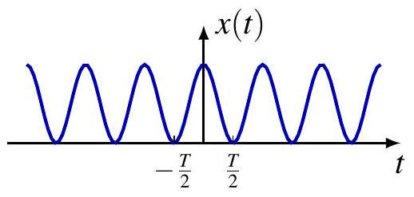
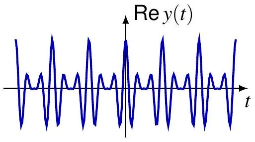
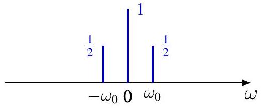
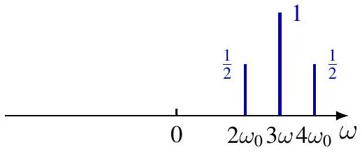
频移示例
例子：\(x(t)=1+\cos \left(\omega_{0} t\right)=1+\frac{1}{2} e^{j \omega_{0} t}+\frac{1}{2} e^{-j \omega_{0} t}\)
\[ \begin{aligned} z(t)=\cos \left(3 \omega_{0} t\right) x(t)=\operatorname{Re} y(t) & =\frac{1}{2} e^{j 3 \omega_{0} t}+\frac{1}{4} e^{j 4 \omega_{0} t}+\frac{1}{4} e^{j 2 \omega_{0} t} \\ & +\frac{1}{2} e^{-j 3 \omega_{0} t}+\frac{1}{4} e^{-j 4 \omega_{0} t}+\frac{1}{4} e^{-j 2 \omega_{0} t} \end{aligned} \]
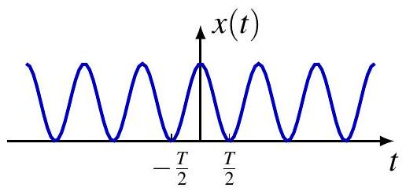
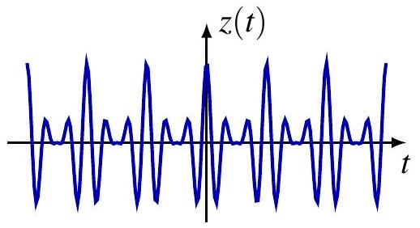
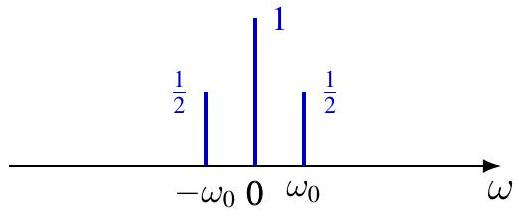
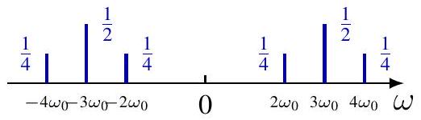
时间反转 (Time Reversal)
如果 \(x\) 周期为 \(T\)，
\[ \widehat{R x}=R \hat{x} \quad \text { 或 } \quad x(-t) \stackrel{\mathcal{F S}}{\longleftrightarrow} \hat{x}[-k] \]
时间反转与傅里叶级数可交换
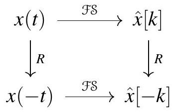
证明：
\[ (\widehat{R x})[k]=\left\langle R x, e^{j k \omega_{0} t}\right\rangle=\left\langle x, R e^{j k \omega_{0} t}\right\rangle=\left\langle x, e^{-j k \omega_{0} t}\right\rangle=\hat{x}[-k] \]
推论：傅里叶级数保持奇/偶对称性，即 \(x\) 偶 \(\Longleftrightarrow \hat{x}\) 偶，\(\quad x\) 奇 \(\Longleftrightarrow \hat{x}\) 奇
时间缩放 (Time Scaling)
如果 \(x\) 周期为 \(T\)，那么 \(S_{a} x\) 周期为 \(T / a\)
\[ \widehat{S_{a} x}=\hat{x} \quad \text { 或 } \quad x(a t) \stackrel{\mathcal{F S}}{\longleftrightarrow} \hat{x}[k] \]
时间缩放保持傅里叶系数不变，但改变基频
\[ \begin{aligned} x(t) & =\sum_{k=-\infty}^{\infty} \hat{x}[k] e^{j k \omega_{0} t} \\ x(a t) & =\sum_{k=-\infty}^{\infty} \hat{x}[k] e^{j k\left(a \omega_{0}\right) t} \end{aligned} \]
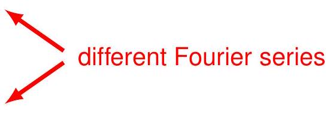
时间缩放
\[ x(t)=\sum_{k=-\infty}^{\infty} \hat{x}[k] e^{j k \omega_{0} t} \]
对比 \(\quad x(a t)=\sum_{k=-\infty}^{\infty} \hat{x}[k] e^{j k\left(a \omega_{0}\right) t}\)
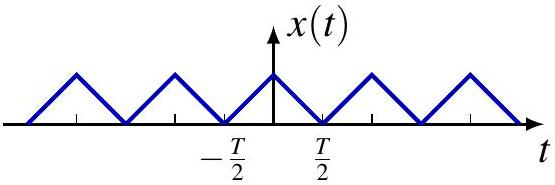
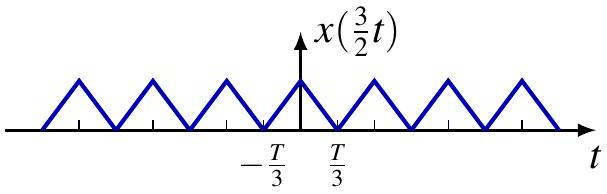
时域压缩 ⟺ 频域（基频）扩展 时域扩展 ⟹ 频域（基频）压缩
微分 (Differentiation)
如果 \(x\) 周期为 \(T\)，那么其导数 \(x^{\prime}\) 也是，且
\[ \widehat{x^{\prime}}=M_{\omega_{0}} \hat{x} \quad \text { 或 } \quad x^{\prime}(t) \stackrel{\mathcal{F S}}{\longleftrightarrow} j k \omega_{0} \hat{x}[k] \]
其中 \(\left(M_{a} \hat{x}\right)[k]=j a k \hat{x}[k]\) 时域微分 ⟹ 频域乘以 \(j k \omega_{0}\)
证明：
\[ \begin{aligned} \widehat{x^{\prime}}[k] & =\frac{1}{T} \int_{T} x^{\prime}(t) e^{-j k \omega_{0} t} d t \\ & =\left.\frac{1}{T}\left[x(t) e^{-j k \omega_{0} t}\right]\right|_{0} ^{T}+j k \omega_{0}\left(\frac{1}{T} \int_{T} x(t) e^{-j k \omega_{0} t} d t\right)=j k \omega_{0} \hat{x}[k] \end{aligned} \]
或者，逐项求导：
\[ x(t)=\sum_{k} \hat{x}[k] e^{j k \omega_{0} t} \Longrightarrow x^{\prime}(t)=\sum_{k} j k \omega_{0} \hat{x}[k] e^{-j k \omega_{0} t} \]
积分 (Integration)
如果 \(x\) 周期为 \(T\) 且有傅里叶级数
\[ x(t)=\sum_{k=-\infty}^{\infty} \hat{x}[k] e^{j k \omega_{0} t} \]
逐项积分：
\[ \begin{aligned} y(t) \triangleq \int_{0}^{t} x(s) d s & =\hat{x}[0] t+\sum_{k \neq 0} \hat{x}[k] \frac{e^{j k \omega_{0} t}-1}{j k \omega_{0}} \\ & =\hat{x}[0] t-\sum_{k \neq 0} \frac{\hat{x}[k]}{j k \omega_{0}}+\sum_{k \neq 0} \frac{1}{j k \omega_{0}} \hat{x}[k] e^{j k \omega_{0} t} \end{aligned} \]
- \(y\) 是周期的，当且仅当 \(\hat{x}[0]=0\)，即 \(x\) 没有直流分量
- 如果 \(\hat{x}[0]=0, y\) 周期为 \(T\)，
\[ \hat{y}[k]=\frac{1}{j k \omega_{0}} \hat{x}[k] \quad \text { 对于 } k \neq 0 \]
例子：三角波
乘法 (Multiplication)
如果 \(x\) 和 \(y\) 具有相同的周期 \(T\)，那么它们的乘积 \(x y\) 也是，且
\[ \begin{gathered} \widehat{x y}=\hat{x} * \hat{y} \quad \text { 或 } \quad x(t) y(t) \stackrel{\mathcal{F S}}{\longleftrightarrow} \sum_{m=-\infty}^{\infty} \hat{x}[m] \hat{y}[k-m] \\ \text { 时域乘法 } \Longleftrightarrow \text { 频域卷积 } \end{gathered} \]
证明：
\[ \begin{aligned} x(t) y(t) & =\left(\sum_{m=-\infty}^{\infty} \hat{x}[m] e^{j m \omega_{0} t}\right)\left(\sum_{\ell=-\infty}^{\infty} \hat{y}[\ell] e^{j \ell \omega_{0} t}\right) \\ & =\sum_{m=-\infty}^{\infty} \sum_{\ell=-\infty}^{\infty} \hat{x}[m] \hat{y}[\ell] e^{j(m+\ell) \omega_{0} t} \\ & =\sum_{k=-\infty}^{\infty}\left(\sum_{m=-\infty}^{\infty} \hat{x}[m] \hat{y}[k-m]\right) e^{j k \omega_{0} t} \quad(k=m+\ell) \end{aligned} \]
周期卷积 (Periodic Convolution)
具有相同周期 \(T\) 的 \(x\) 和 \(y\) 的周期卷积 \(x * y\) 定义为：
\[ (x * y)(t)=\int_{T} x(\tau) y(t-\tau) d \tau \]
性质：
- 交换律
\[ x * y=y * x \]
- 结合律
\[ (x * y) * z=x *(y * z) \]
- 双线性
\[ \left(\sum_{i} a_{i} x_{i}\right) *\left(\sum_{j} b_{j} y_{j}\right)=\sum_{i, j} a_{i} b_{j}\left(x_{i} * y_{j}\right) \]
周期卷积性质
傅里叶系数满足
\[ \widehat{x * y}=T \hat{x} \hat{y} \quad \text { 或 } \quad(x * y)(t) \stackrel{\mathcal{F S}}{\longleftrightarrow} T \hat{x}[k] \hat{y}[k] \]
时域卷积 ⟹ 频域乘法
证明：
\[ \begin{aligned} (\widehat{x * y})[k] & =\frac{1}{T} \int_{T}(x * y)(t) e^{-j k \omega_{0} t} d t \\ & =\frac{1}{T} \int_{T}\left(\int_{T} x(\tau) y(t-\tau) d \tau\right) e^{-j k \omega_{0} t} d t \\ & =\int_{T} x(\tau)\left(\frac{1}{T} \int_{T} y(t-\tau) e^{-j k \omega_{0} t} d t\right) d \tau \\ & =\int_{T} x(\tau)\left(e^{-j k \omega_{0} \tau} \hat{y}[k]\right) d \tau=T \hat{x}[k] \hat{y}[k] \end{aligned} \]
共轭与对称 (Conjugation and Symmetry)
如果 \(x\) 周期为 \(T\)，那么其复共轭 \(\bar{x}=x^{*}\) 也是，且
\[ \widehat{x^{*}}=R \hat{x}^{*} \quad \text { 或 } \quad x^{*}(t) \stackrel{\mathcal{F S}}{\longleftrightarrow}(\hat{x}[-k])^{*} \]
证明：
\[ \widehat{x^{*}}[k]=\left\langle x^{*}, e^{j k \omega_{0} t}\right\rangle=\overline{\left\langle x, e^{-j k \omega_{0} t}\right\rangle}=\overline{\hat{x}[-k]} \]
推论：如果 \(x\) 是实信号，则 \(\hat{x}\) 是共轭对称的，即
\[ \hat{x}[-k]=\overline{\hat{x}[k]} \]
推论：如果 \(x\) 是实偶信号，则 \(\hat{x}\) 也是实偶信号
\[ \hat{x}[k]=\hat{x}[-k]=\overline{\hat{x}[k]} \]
推论：如果 \(x\) 是实奇信号，则 \(\hat{x}\) 是纯虚奇信号
\[ -\hat{x}[k]=\hat{x}[-k]=\overline{\hat{x}[k]} \]
2. 傅里叶级数的收敛性
向量空间 (Vector Space)
域 \(\mathbb{F}\) (\(\mathbb{R}\) 或 \(\mathbb{C}\)) 上的向量空间 \(V\) 具有两种运算：
- 加法：\(x, y \in V \Longrightarrow x+y \in V\)
- 标量乘法：\(\lambda \in \mathbb{F}, x \in V \Longrightarrow \lambda x \in V\)
满足以下公理：
- 加法交换律：\(x+y=y+x, \forall x, y \in V\)
- 加法结合律：\((x+y)+z=x+(y+z), \forall x, y, z \in V\)
- 加法单位元：\(\exists 0 \in V\) s.t. \(x+0=x, \forall x \in V\)
- 加法逆元：\(\forall x \in V, \exists y \in V\) s.t. \(x+y=0\)
- 标量乘法单位元：\(1 x=x, \forall x \in V\)
- 标量与域乘法的相容性：\(\lambda_{1}\left(\lambda_{2} x\right)=\left(\lambda_{1} \lambda_{2}\right) x, \forall \lambda_{1}, \lambda_{2} \in \mathbb{F}, x \in V\)
- 分配律：\(\lambda(x+y)=\lambda x+\lambda y, \forall \lambda \in \mathbb{F}, x, y \in V\)
- 分配律：\(\left(\lambda_{1}+\lambda_{2}\right) x=\lambda_{1} x+\lambda_{2} x, \forall \lambda_{1}, \lambda_{2} \in \mathbb{F}, x \in V\)
向量空间示例
示例：\(\mathbb{R}^{n}, \mathbb{C}^{n}\)
\[ \begin{gathered} \left(x_{1}, \ldots, x_{n}\right)^{T}+\left(y_{1}, \ldots, y_{n}\right)^{T}=\left(x_{1}+y_{1}, \ldots, x_{n}+y_{n}\right)^{T} \\ \lambda\left(x_{1}, \ldots, x_{n}\right)^{T}=\left(\lambda x_{1}, \ldots, \lambda x_{n}\right)^{T} \end{gathered} \]
示例：CT 实/复值信号 \(\mathbb{R}^{\mathbb{R}}, \mathbb{C}^{\mathbb{R}}\)
\[ \begin{gathered} (x+y)(t)=x(t)+y(t) \\ (\lambda x)(t)=\lambda x(t) \end{gathered} \]
示例：DT 实/复值信号 \(\mathbb{R}^{\mathbb{Z}}, \mathbb{C}^{\mathbb{Z}}\)
\[ \begin{gathered} (x+y)[n]=x[n]+y[n] \\ (\lambda x)[n]=\lambda x[n] \end{gathered} \]
赋范向量空间 (Normed Vector Space)
域 \(\mathbb{F}\) 上向量空间 \(V\) 的范数 \(\|\cdot\|: V \rightarrow \mathbb{R}_{+}\) 满足：
- 正定性 (Positive definiteness)
\[ \|x\|=0 \Longleftrightarrow x=0 \]
- 绝对齐次性 (Absolute homogeneity)
\[ \|\lambda x\|=|\lambda| \cdot\|x\|, \quad \forall \lambda \in \mathbb{F}, x \in V \]
- 三角不等式 (Triangle inequality)
\[ \|x+y\| \leq\|x\|+\|y\| \]
带有范数的向量空间称为赋范向量空间。
赋范向量空间示例
示例：\(\mathbb{R}^{n}, \mathbb{C}^{n}\)
\[ \|x\|_{p}= \begin{cases}\left(\sum_{k=1}^{n}\left|x_{k}\right|^{p}\right)^{1 / p}, & 1 \leq p<\infty \\ \max _{1 \leq k \leq n}\left|x_{k}\right|, & p=\infty\end{cases} \]
示例：CT 实/复值信号 \(\mathbb{R}^{\mathbb{R}}, \mathbb{C}^{\mathbb{R}}\)
\[ \|x\|_{p}= \begin{cases}\left(\int|x(t)|^{p} d t\right)^{1 / p}, & 1 \leq p<\infty \\ \sup _{t}|x(t)|, & p=\infty\end{cases} \]
示例：DT 实/复值信号 \(\mathbb{R}^{\mathbb{Z}}, \mathbb{C}^{\mathbb{Z}}\)
\[ \|x\|_{p}= \begin{cases}\left(\sum_{k=-\infty}^{\infty}|x[k]|^{p}\right)^{1 / p}, & 1 \leq p<\infty \\ \sup _{k \in \mathbb{Z}}|x[k]|, & p=\infty\end{cases} \]
内积空间 (Inner Product Space)
域 \(\mathbb{F}\) (\(\mathbb{R}\) 或 \(\mathbb{C}\)) 上向量空间 \(V\) 的内积 \(\langle\cdot, \cdot\rangle: V \times V \rightarrow \mathbb{F}\) 满足：
- 共轭对称性 (Conjugate symmetry)
\[ \langle x, y\rangle=\overline{\langle y, x\rangle} \]
- 第一变元线性 (Linearity in first argument)
\[ \langle a x+b y, z\rangle=a\langle x, z\rangle+b\langle x, z\rangle \]
- 正定性 (Positive definiteness)
\[ \begin{gathered} \langle x, x\rangle \geq 0 \\ \langle x, x\rangle=0 \Longleftrightarrow x=0 \end{gathered} \]
带有内积的向量空间称为内积空间。
内积空间示例
示例：\(\mathbb{R}^{n}, \mathbb{C}^{n}\)
\[ \langle x, y\rangle=\sum_{k=1}^{n} x_{k} \bar{y}_{k} \]
示例：CT 实/复值信号 \(\mathbb{R}^{\mathbb{R}}, \mathbb{C}^{\mathbb{R}}\)
\[ \langle x, y\rangle=\int_{\mathbb{R}} x(t) \overline{y(t)} d t \]
示例：DT 实/复值信号 \(\mathbb{R}^{\mathbb{Z}}, \mathbb{C}^{\mathbb{Z}}\)
\[ \langle x, y\rangle=\sum_{k=-\infty}^{\infty} x[k] \overline{y[k]} \]
在所有情况下：
\[ \|x\|_{2}=\sqrt{\langle x, x\rangle} \]
对于内积空间，通常用 \(\|\cdot\|\) 代替 \(\|\cdot\|_{2}\)。
柯西-施瓦茨不等式 (Cauchy-Schwarz Inequality)
\[ |\langle x, y\rangle| \leq\|x\| \cdot\|y\| \]
证明：如果 \(\|y\|=0\)，则 \(y=0\) 且 \(\langle x, y\rangle=\|x\| \cdot\|y\|\)。现在假设 \(\|y\| \neq 0\)。对于任意 \(\lambda \in \mathbb{C}\)，
\[ 0 \leq\langle x-\lambda y, x-\lambda y\rangle=\|x\|^{2}-\lambda \overline{\langle x, y\rangle}-\bar{\lambda}\langle x, y\rangle+|\lambda|^{2}\|y\|^{2} \]
令 \(\lambda=\langle x, y\rangle /\|y\|^{2}\)，
\[ 0 \leq\|x\|^{2}-\frac{|\langle x, y\rangle|^{2}}{\|y\|^{2}}-\frac{|\langle x, y\rangle|^{2}}{\|y\|^{2}}+\frac{|\langle x, y\rangle|^{2}}{\|y\|^{2}} \Longrightarrow|\langle x, y\rangle| \leq\|x\| \cdot\|y\| \]
积分形式：
\[ \left|\int_{\mathbb{R}} x(t) \overline{y(t)} d t\right| \leq \sqrt{\int_{\mathbb{R}}|x(t)|^{2} d t} \cdot \sqrt{\int_{\mathbb{R}}|y(t)|^{2} d t} \]
内积空间中的正交归一系
如果 \(\langle x, y\rangle=0\)，则两个向量 \(x, y \in V\) 是正交的。 如果 \(\|x\|=1\) 或 \(\langle x, x\rangle=1\)，则向量 \(x \in V\) 是单位向量。 如果对于 \(m \neq k\)，\(\left\langle x_{k}, x_{m}\right\rangle=0\)，则 \(\left\{x_{k}\right\}\) 是正交系。 如果 \(\left\langle e_{k}, e_{m}\right\rangle=\delta_{k m}=\delta[k-m]\)，则 \(\left\{e_{k}\right\}\) 是正交归一系 (orthonormal system)。
示例：令 \(V\) 为周期为 \(T\) 的函数集合。内积为：
\[ \langle x, y\rangle=\frac{1}{T} \int_{T} x(t) \overline{y(t)} d t \]
令 \(e_{k}(t)=e^{j k \frac{2 \pi}{T} t}\)。回顾 \(\left\{e_{k}: k \in \mathbb{Z}\right\}\) 是正交归一系：
\[ \left\langle e_{k}, e_{m}\right\rangle=\delta[k-m] \]
正交归一展开 (Orthonormal Expansion)
给定正交归一系 \(\left\{e_{k}\right\}\)，假设
\[ x=\sum_{k} c_{k} e_{k} \]
通过与 \(e_{m}\) 做内积来求系数：
\[ \left\langle x, e_{m}\right\rangle=\left\langle\sum_{k} c_{k} e_{k}, e_{m}\right\rangle=\sum_{k} c_{k}\left\langle e_{k}, e_{m}\right\rangle=\sum_{k} c_{k} \delta[k-m]=c_{m} \]
广义傅里叶级数：
\[ x=\sum_{k}\left\langle x, e_{k}\right\rangle e_{k} \]
这就是我们要做的傅里叶级数展开。
最佳均方逼近 (Best Mean-square Approximation)
用 \(\operatorname{span}\left\{e_{1}, \ldots, e_{n}\right\}\) 中的元素逼近 \(x\) 的均方误差，即用形式为 \(y=\sum_{k=1}^{n} a_{k} e_{k}\) 的元素：
\[ \begin{aligned} \|x-y\|^{2} & =\left\langle x-\sum_{k=1}^{n} a_{k} e_{k}, x-\sum_{k=1}^{n} a_{k} e_{k}\right\rangle \\ & =\|x\|^{2}-\sum_{k=1}^{n} a_{k}\left\langle e_{k}, x\right\rangle-\sum_{k=1}^{n} \bar{a}_{k}\left\langle x, e_{k}\right\rangle+\sum_{k=1}^{n}\left|a_{k}\right|^{2} \\ & =\|x\|^{2}-2 \sum_{k=1}^{n} \operatorname{Re}\left(\bar{a}_{k}\left\langle x, e_{k}\right\rangle\right)+\sum_{k=1}^{n}\left|a_{k}\right|^{2} \\ & \geq\|x\|^{2}-2 \sum_{k=1}^{n}\left|a_{k}\right| \cdot\left|\left\langle x, e_{k},\right\rangle\right|+\sum_{k=1}^{n}\left|a_{k}\right|^{2} \quad(\text { 使用 }|\operatorname{Re} z| \leq|z|) \\ & =\|x\|^{2}-\sum_{k=1}^{n}\left|\left\langle x, e_{k}\right\rangle\right|^{2}+\sum_{k=1}^{n}\left(\left|a_{k}\right|-\left|\left\langle x, e_{k},\right\rangle\right|\right)^{2} \end{aligned} \]
最佳均方逼近 (续)
逼近的均方误差：
\[ \begin{aligned} \|x-y\|^{2} & \stackrel{(1)}{\geq}\|x\|^{2}-\sum_{k=1}^{n}\left|\left\langle x, e_{k}\right\rangle\right|^{2}+\sum_{k=1}^{n}\left(\left|a_{k}\right|-\left|\left\langle x, e_{k},\right\rangle\right|\right)^{2} \\ & \stackrel{(2)}{\geq}\|x\|^{2}-\sum_{k=1}^{n}\left|\left\langle x, e_{k}\right\rangle\right|^{2} \end{aligned} \]
当且仅当 \(a_{k}=\left\langle x, e_{k}\right\rangle\) 时达到最小均方误差。
- 处取等号要求 \(\arg a_{k}=\arg \left\langle x, e_{k}\right\rangle\)
- 处取等号要求 \(\left|a_{k}\right|=\left|\left\langle x, e_{k}\right\rangle\right|\)
傅里叶部分和 \(S_{N}(x)=\sum_{k=-N}^{N} \hat{x}[k] e^{j k \omega_{0} t}\) 是最佳均方逼近：
\[ \left\|x-S_{N}(x)\right\|^{2}=\min _{a_{k},-N \leq k \leq N}\left\|x-\sum_{k=-N}^{N} a_{k} e^{j k \omega_{0} t}\right\|^{2} \]
贝塞尔不等式 (Bessel’s Inequality)
最小均方误差：
\[ \left\|x-\sum_{k=1}^{n}\left\langle x, e_{k}\right\rangle e_{k}\right\|^{2}=\|x\|^{2}-\sum_{k=1}^{n}\left|\left\langle x, e_{k}\right\rangle\right|^{2} \]
贝塞尔不等式：
\[ \sum_{k}\left|\left\langle x, e_{k}\right\rangle\right|^{2} \leq\|x\|^{2} \]
对于具有有限 2-范数的信号的傅里叶系数：
\[ \sum_{k=-\infty}^{\infty}|\hat{x}[k]|^{2} \leq\|x\|^{2} \]
推论：\(\lim _{k \rightarrow \infty} \hat{x}[k]=0\)
帕塞瓦尔恒等式 (Parseval’s Identity)
对于具有有限 2-范数 的信号的傅里叶系数：
\[ \sum_{k=-\infty}^{\infty}|\hat{x}[k]|^{2}=\|x\|^{2}=\frac{1}{T} \int_{T}|x(t)|^{2} d t \]
解释：能量守恒
- \(|\hat{x}[k]|^{2}\) 是第 \(k\) 次谐波分量的平均功率
- \(\|x\|^{2}\) 是 \(x\) 的平均功率
- 总功率是所有分量功率之和
定理：傅里叶级数在均方意义下收敛
\[ \lim _{N \rightarrow \infty}\left\|x-S_{N}(x)\right\|=0 \]
注意：均方收敛并不意味着逐点收敛。
最佳均方逼近
Given orthonormal system \(\left\{e_{1}, \ldots, e_{n}\right\}\), best mean-square approximation of \(x\) by element in \(\operatorname{span}\left\{e_{1}, \ldots, e_{n}\right\}\), i.e. by element of form \(y=\sum_{k=1}^{n} a_{k} e_{k}\) is
\[ y=\sum_{k=1}^{n}\left\langle x, e_{k}\right\rangle e_{k}, \]
with minimum mean-square error
\[ \|x-y\|^{2}=\|x\|^{2}-\sum_{k=1}^{n}\left|\left\langle x, e_{k}\right\rangle\right|^{2} . \]
Geometry of 最佳均方逼近
Orthogonal projection onto subspace span \(\left\{e_{1}, \ldots, e_{n}\right\}\) Pythagorean theorem
赋范向量空间中的收敛
In normed vector space \((V,\|\cdot\|)\), sequence \(\left\{x_{n}\right\}\) converges to \(x \in V\) if
\[ \lim _{n \rightarrow \infty}\left\|x_{n}-x\right\|=0 \]
We say \(x\) is the limit of \(\left\{x_{n}\right\}\) and write
\[ x=\lim _{n \rightarrow \infty} x_{n}, \quad \text { or } \quad x_{n} \rightarrow x, \text { as } n \rightarrow \infty . \]
Sequence \(\left\{x_{n}\right\} \subset V\) is Cauchy sequence iff
\[ \left\|x_{n}-x_{m}\right\| \rightarrow 0, \quad \text { as } n, m \rightarrow \infty . \]
Theorem. Every convergent sequence is Cauchy. Proof. If \(x_{n} \rightarrow x\), triangle inequality yields
\[ \left\|x_{n}-x_{m}\right\| \leq\left\|x_{n}-x\right\|+\left\|x_{m}-x\right\| \rightarrow 0, \quad \text { as } n, m \rightarrow \infty . \]
巴拿赫空间
Normed vector space ( \(V,\|\cdot\|\) ) is complete if every Cauchy sequence converges.
Complete normed vector space is called Banach space.
巴拿赫空间的例子
- \(\left(\mathbb{R}^{n},\|\cdot\|_{p}\right),\left(\mathbb{C}^{n},\|\cdot\|_{p}\right)\)
- DT signal space \(\ell_{p}=\left\{x \in \mathbb{C}^{\mathbb{Z}}:\|x\|_{p}<\infty\right\}\) with \(\ell_{p}\) norm
- CT signal space \(L_{p}=\left\{x \in \mathbb{C}^{\mathbb{R}}:\|x\|_{p}<\infty\right\}\) with \(L_{p}\) norm
- Space \(L_{2}(T)\) of CT signals with period \(T\) and finite average power, \(\|x\|^{2}=\frac{1}{T} \int_{T}|x(t)|^{2} d t<\infty\)
- Space \(C(T)\) of continuous \(T\)-periodic CT signals with \(L_{\infty}\) norm
\[ \|x\|_{\infty}=\sup _{t \in[0, T]}|x(t)|=\sup _{t \in \mathbb{R}}|x(t)| . \]
\(x_{n} \rightarrow x\) in \(L_{\infty}\) norm means uniform convergence
巴拿赫空间
非完备空间的例子
- \((\mathbb{Q},|\cdot|)\). Its completion is \((\mathbb{R},|\cdot|)\)
- Space \(C(T)\) of continuous \(T\)-periodic CT signals with \(L_{2}\) norm. Its completion is \(L_{2}(T)\)
- periodic odd function with period \(T=1\)
\[ x_{n}= \begin{cases}n t, & 0 \leq t \leq \frac{1}{n} \\ 1, & \frac{1}{n} \leq \frac{1}{2}-\frac{1}{n} \\ 1-n t, & \frac{1}{2}-\frac{1}{n} \leq t \leq \frac{1}{2}\end{cases} \]
- \(x_{n} \in C(1)\)
- \(x_{n}\) converges to periodic square wave in \(L_{2}\) norm
- but periodic square function not in \(C(1)\)
Same vector space with different norms becomes different normed vector spaces, e.g \(\left(C(T),\|\cdot\|_{\infty}\right)\) vs. \(\left(C(T),\|\cdot\|_{2}\right)\)
Incompleteness of \(C(T)\) with \(L_{2}\) Norm \(\left\|x_{n}-x\right\|_{2}^{2}=\left(\int_{-\frac{1}{n}}^{\frac{1}{n}}+\int_{\frac{1}{2}-\frac{1}{n}}^{\frac{1}{2}+\frac{1}{n}}\right)\left|x_{n}(t)-x(t)\right|^{2} d t \leq \frac{4}{n} \rightarrow 0\) \(x \in L_{2}(1)\) but \(x \notin C(1)\). Also \(\left\|x_{n}-x\right\|_{\infty}=1, \forall n\)
\(L_{2}\) Convergence vs. 逐点收敛
For \(n \geq 0\) and \(0 \leq k<2^{n}\),
\[ n=0, k=0 \]
\[ x_{2^{n}+k}= \begin{cases}1, & \frac{k}{2^{n}} \leq t<\frac{k+1}{2^{n}} \\ 0, & \text { otherwise }\end{cases} \]
\[ n=1, k=0 \]
\[ n=1, k=1 \]
- \(x_{2^{n}+k} \rightarrow 0\) in \(L_{2}\) norm
\[ n=2, k=0 \]
\[ \left\|x_{2^{n}+k}-0\right\|_{2}=\frac{1}{2^{n / 2}} \rightarrow 0 \]
\[ n=2, k=1 \]
- not convergent at any \(t_{0} \in[0,1)\)
- \(\forall n, \exists k_{1}\) s.t \(x_{2^{n}+k_{1}}\left(t_{0}\right)=1\)
\[ n=2, k=2 \]
- \(\forall n, \exists k_{0}\) s.t \(x_{2^{n}+k_{0}}\left(t_{0}\right)=0\)
\[ n=2, k=3 \]
希尔伯特空间
Inner product space \((V,\langle\cdot, \cdot\rangle)\) is also normed vector space with induced norm \(\|x\|=\sqrt{\langle x, x\rangle}\). \((V,\langle\cdot, \cdot\rangle)\) is complete if ( \(V,\|\cdot\|\) ) with induced norm is complete. Complete inner produce space is called Hilbert space.
希尔伯特空间的例子
- \(\mathbb{R}^{n}\) with \(\langle x, y\rangle=\sum_{k=1}^{n} x_{k} y_{k} ; \mathbb{C}^{n}\) with \(\langle x, y\rangle=\sum_{k=1}^{n} x_{k} \bar{y}_{k}\)
- Space \(\ell_{2}\) with \(\langle x, y\rangle=\sum_{k=-\infty}^{\infty} x_{k} \bar{y}_{k}\)
- Space \(L_{2}\) with \(\langle x, y\rangle=\int_{\mathbb{R}} x(t) \overline{y(t)} d t\)
- Space \(L_{2}(T)\) with \(\langle x, y\rangle=\frac{1}{T} \int_{T} x(t) \overline{y(t)} d t\)
Example of incomplete space
- Space \(C(T)\) with \(\langle x, y\rangle=\frac{1}{T} \int_{T} x(t) \overline{y(t)} d t L_{2}(T)\) is completion of \(C(T)\).
完备正交规范序列
Orthonormal sequence \(\left\{e_{k}: k \in \mathbb{N}\right\}\) in Hilbert space \(H\) is complete if every \(x \in H\) has expansion
\[ x=\sum_{k=1}^{\infty}\left\langle x, e_{k}\right\rangle e_{k} \]
i.e.
\[ \lim _{n \rightarrow \infty}\left\|x-\sum_{k=1}^{n}\left\langle x, e_{k}\right\rangle e_{k}\right\|=0 \]
Complete orthonormal sequence also called orthonormal basis of \(H\).
Example. \(\left\{\delta_{k}: k \in \mathbb{Z}\right\}\) is orthonormal basis of \(\ell_{2}\)
帕塞瓦尔恒等式
If \(\left\{e_{k}: k \in \mathbb{N}\right\}\) orthonormal basis of \(H\),
\[ \|x\|^{2}=\sum_{k=1}^{\infty}\left|\left\langle x, e_{k}\right\rangle\right|^{2} \]
Proof. By Pythagorean theorem
\[ \|x\|^{2}=\sum_{k=1}^{n}\left|\left\langle x, e_{k}\right\rangle\right|^{2}+\left\|x-\sum_{k=1}^{n}\left\langle x, e_{k}\right\rangle e_{k}\right\|^{2} \]
Let \(n \rightarrow \infty\) and last term goes to zero by definition of orthonormal basis.
帕塞瓦尔恒等式
\(H\) is isomorphic to \(\ell_{2}, x \leftrightarrow\left\{\left\langle x, e_{k}\right\rangle: k \in \mathbb{N}\right\}\) and
\[ \langle x, y\rangle=\sum_{k=1}^{\infty}\left\langle x, e_{k}\right\rangle \overline{\left\langle y, e_{k}\right\rangle} \]
Proof.
\[ \begin{aligned} \langle x, y\rangle & =\left\langle\sum_{k}\left\langle x, e_{k}\right\rangle e_{k}, \sum_{m}\left\langle y, e_{m}\right\rangle e_{m}\right\rangle \\ & =\sum_{k}\left\langle x, e_{k}\right\rangle \sum_{m} \overline{\left\langle y, e_{m}\right\rangle}\left\langle e_{k}, e_{m}\right\rangle \\ & =\sum_{k}\left\langle x, e_{k}\right\rangle \sum_{m} \overline{\left\langle y, e_{m}\right\rangle} \delta[k-m] \\ & =\sum_{k}\left\langle x, e_{k}\right\rangle \overline{\left\langle y, e_{k}\right\rangle} \end{aligned} \]
NB. When \(x=y\), we recover \(\|x\|^{2}=\sum_{k=1}^{\infty}\left|\left\langle x, e_{k}\right\rangle\right|^{2}\)
傅里叶级数的均方收敛
Theorem. \(\left\{e^{j k \frac{2 \pi}{T} t}: k \in \mathbb{Z}\right\}\) is orthonormal basis of \(L_{2}(T)\). For any \(x \in L_{2}(T)\), Fourier series converges in mean-square, i.e. in \(L_{2}\) norm
\[ \lim _{N \rightarrow \infty}\left\|x-S_{N}(x)\right\|=0 \]
NB. Convergence in mean-square does not imply pointwise convergence Parseval’s identity
\[ \sum_{k=-\infty}^{\infty}|\hat{x}[k]|^{2}=\|x\|^{2}=\frac{1}{T} \int_{T}|x(t)|^{2} d t \]
Interpretation: Energy conservation
- \(|\hat{x}[k]|^{2}\) is average power of \(k\)-th harmonic component
- \(\|x\|^{2}\) is average power of \(x\)
Fourier Series of \(L_{2}\) Signals
Correspondence between periodic functions and doubly infinite sequences; time domain vs. frequency domain
\[ x \stackrel{\mathcal{F S}}{\longleftrightarrow} \hat{x} \quad \text { or } \quad x(t) \stackrel{\mathcal{F S}}{\longleftrightarrow} \hat{x}[k] \]
Fourier series is isomorphism between Hilbert space of \(L_{2}\) signals and Hilbert space of \(\ell_{2}\) Fourier coefficients
\[ \begin{aligned} \mathcal{F S}: L_{2}(T) & \rightarrow \ell_{2} \\ x & \mapsto \hat{x} \end{aligned} \]
Will see discrete-time Fourier transform goes from \(\hat{x}\) to \(x\) Parseval’s theorem
\[ \langle x, y\rangle_{L_{2}(T)}=\langle\hat{x}, \hat{y}\rangle_{\ell_{2}} \]
目录
- 傅里叶级数的均方收敛
- 傅里叶级数的逐点收敛
- 周期冲激列的傅里叶级数
- 滤波
部分和的积分表示
WLOG, focus on \(T=2 \pi\) and \(\omega_{0}=1\)
\[ \begin{aligned} S_{N}(x)(t) & =\sum_{k=-N}^{N} \hat{x}[k] e^{j k t} \\ & =\sum_{k=-N}^{N}\left(\frac{1}{2 \pi} \int_{2 \pi} x(\tau) e^{-j k \tau} d \tau\right) e^{j k t} \\ & =\frac{1}{2 \pi} \int_{2 \pi} x(\tau) \sum_{k=-N}^{N} e^{j k(t-\tau)} d \tau \\ & =\frac{1}{2 \pi} \int_{2 \pi} x(\tau) D_{N}(t-\tau) d \tau=\left(x * \frac{D_{N}}{2 \pi}\right)(t) \end{aligned} \]
where \(D_{N}\) is Dirichlet kernel
\[ D_{N}(t)=\sum_{k=-N}^{N} e^{j k t}=\frac{\sin \left(\left(N+\frac{1}{2}\right) t\right)}{\sin (t / 2)} \]
狄利克雷核
Plot of \(\frac{D_{N}}{2 \pi}\) for various \(N\)
\(N=4\)
\(N=8\)
\(N=16\)
If \(\frac{D_{N}}{2 \pi} \rightarrow \delta\) (more precisely, periodic impulse train on slide 22), then would have \(S_{N}(x)=x * \frac{D_{N}}{2 \pi} \rightarrow x * \delta=x\) at least for continuous \(x\)
Unfortunately, exists continuous \(x\) whose Fourier partial sum \(S_{N}(x)\), as \(N \rightarrow \infty\), fails to converge at all at some \(t\), let alone converges to \(x(t)\) at such \(t\)
逐点收敛
Theorem. If \(x\) is differentiable, then \(\lim _{N \rightarrow \infty} S_{N}(x)(t)=x(t), \forall t\). Proof. Fix \(t\). Define
\[ F(\tau)= \begin{cases}\frac{x(t-\tau)-x(t)}{\sin (\tau / 2)}, & \tau \neq 0 \\ -2 x^{\prime}(t), & \tau=0\end{cases} \]
which is continuous on \([-\pi, \pi]\). Note \(\frac{1}{2 \pi} \int_{-\pi}^{\pi} D_{N}(\tau) d \tau=1\).
\[ \begin{aligned} S_{N}(x)(t)-x(t) & =\frac{1}{2 \pi} \int_{-\pi}^{\pi} x(t-\tau) D_{N}(\tau) d \tau-\frac{1}{2 \pi} \int_{-\pi}^{\pi} x(t) D_{N}(\tau) d \tau \\ & =\frac{1}{2 \pi} \int_{-\pi}^{\pi}[x(t-\tau)-x(t)] D_{N}(\tau) d \tau \\ & =\frac{1}{2 \pi} \int_{-\pi}^{\pi} F(\tau) \sin \left(\left(N+\frac{1}{2}\right) \tau\right) d \tau \end{aligned} \]
逐点收敛
Theorem. If \(x\) is differentiable, then \(\lim _{N \rightarrow \infty} S_{N}(x)(t)=x(t)\). Proof (cont’d). Define \(y(\tau)=e^{-j \frac{\tau}{2}} F(\tau)\).
\[ \begin{aligned} S_{N}(x)(t)-x(t) & =\frac{1}{2 \pi} \int_{-\pi}^{\pi} F(\tau) \sin \left(\left(N+\frac{1}{2}\right) \tau\right) d \tau \\ & =-\operatorname{lm} \frac{1}{2 \pi} \int_{-\pi}^{\pi} y(\tau) e^{-j N \tau} d \tau \\ & =-\operatorname{lm} \hat{y}[N] \end{aligned} \]
Being continuous on \([-\pi, \pi], y(\tau) \in L_{2}(2 \pi)\). Bessel’s inequality implies \(\hat{y}[N] \rightarrow 0\), so
\[ S_{N}(x)(t)-x(t)=-\operatorname{lm} \hat{y}[N] \rightarrow 0, \quad \text { as } N \rightarrow \infty \]
狄利克雷判别法
Theorem. If \(x\) satisfies following Dirichlet conditions
- \(x\) is bounded, i.e. \(\|x\|_{\infty}<\infty\),
- \(x\) is piecewise monotone, i.e. \(\exists\) finite partition of a period s.t. \(x\) is monotone on each segment, then
\[ \lim _{N \rightarrow \infty} S_{N}(x)(t)=\frac{x\left(t_{+}\right)+x\left(t_{-}\right)}{2} \]
\[ \lim _{N \rightarrow \infty} S_{N}(x)(t)= \begin{cases}1, & t \in\left(n, n+\frac{1}{2}\right), \\ -1, & t \in\left(n-\frac{1}{2}, n\right),, \quad n \in \mathbb{Z} \\ 0, & t=\frac{n}{2},\end{cases} \]
目录
- 傅里叶级数的均方收敛
- 傅里叶级数的逐点收敛
- 周期冲激列的傅里叶级数
- 滤波
周期冲激列
\[ x(t)=\sum_{k=-\infty}^{\infty} \delta(t-k T) \]
For “good” enough function \(\phi\), e.g. infinitely differentiable function with compact support,
\[ \begin{gathered} (\phi * x)(t)=\sum_{k=-\infty}^{\infty} \phi(t-k T) \\ \int_{\mathbb{R}} \phi(t) x(t) d t=\sum_{k=-\infty}^{\infty} \int_{\mathbb{R}} \phi(t) \delta(t-k T) d t=\sum_{k=-\infty}^{\infty} \phi(k T) \end{gathered} \]
周期冲激列
\[ x(t)=\sum_{k=-\infty}^{\infty} \delta(t-k T) \]
Fourier coefficients
\[ \hat{x}[k]=\frac{1}{T} \int_{-T / 2}^{T / 2} \delta(t) e^{-j k \frac{2 \pi}{T} t} d t=\frac{1}{T} \]
Fourier series
\[ x(t)=\sum_{k=-\infty}^{\infty} \frac{1}{T} e^{j k \frac{2 \pi}{T} t}=\lim _{N \rightarrow \infty} \frac{1}{T} D_{N}\left(\frac{2 \pi}{T} t\right) \]
where \(D_{N}\) is Dirichlet kernel
周期冲激列
\[ x(t)=\sum_{k=-\infty}^{\infty} \delta(t-k T)=\sum_{k=-\infty}^{\infty} \frac{1}{T} e^{j k \frac{2 \pi}{T} t} \]
周期冲激列
\[ \begin{aligned} \int_{\mathbb{R}} \phi(t) x(t) d t & =\lim _{N \rightarrow \infty} \frac{1}{T} \int_{\mathbb{R}} \phi(t) D_{N}\left(-\frac{2 \pi}{T} t\right) d t \quad\left(D_{N} \text { is even }\right) \\ & =\lim _{N \rightarrow \infty} \frac{1}{2 \pi} \int_{\mathbb{R}} \phi\left(-\frac{T}{2 \pi} t\right) D_{N}(t) d t \\ & =\lim _{N \rightarrow \infty} \sum_{k=-\infty}^{\infty} \frac{1}{2 \pi} \int_{(2 k-1) \pi}^{(2 k+1) \pi} \phi\left(-\frac{T}{2 \pi} t\right) D_{N}(t) d t \\ & =\sum_{k=-\infty}^{\infty} \lim _{N \rightarrow \infty} \frac{1}{2 \pi} \int_{-\pi}^{\pi} \phi\left(\frac{T}{2 \pi}(2 \pi k-t)\right) D_{N}(t-2 k \pi) d t \\ & \left.=\sum_{k=-\infty}^{\infty} \lim _{N \rightarrow \infty} \frac{1}{2 \pi} \int_{-\pi}^{\pi} \phi\left(\frac{T}{2 \pi}(2 \pi k-t)\right)_{\left(D_{N}\right.} \text { is } 2 \pi \text {-periodic }\right) \\ & =\sum_{k=-\infty}^{\infty} \lim _{N \rightarrow \infty} S_{N}(\phi)(k T)=\sum_{k=-\infty}^{\infty} \phi(k T) \end{aligned} \]
与周期方波的关系
\[ \begin{aligned} r^{\prime}(t) & =x\left(t+T_{1}\right)-x\left(t-T_{1}\right) \\ \widehat{r^{\prime}}[k] & =\left(e^{j k \omega_{0} T_{1}}-e^{-j k \omega_{0} T_{1}}\right) \hat{x}[k]=\frac{2 j \sin \left(k \omega_{0} T_{1}\right)}{T} \\ \hat{r}[k] & =\frac{1}{j k \omega_{0}} \widehat{r^{\prime}}[k]=\frac{\sin \left(k \omega_{0} T_{1}\right)}{k \pi}, \quad k \neq 0 \end{aligned} \]
目录
- 傅里叶级数的均方收敛
- 傅里叶级数的逐点收敛
- 周期冲激列的傅里叶级数
- 滤波
2. DT 傅里叶级数
DT 周期信号
回顾：DT 信号是周期的，周期为 \(N\)，如果
\[ x=\tau_{N} x \quad \text { 或 } \quad x[n]=x[n+N], \forall n \in \mathbb{Z} \]
- 基波周期 \(N\)：最小的正周期
- 基频 \(\begin{cases}\frac{2 \pi}{N}, & \text { 如果 } N>1 \\ 0, & \text { 如果 } N=1\end{cases}\)
复指数信号 \(\phi_{N}^{k}[n]=e^{j k \frac{2 \pi}{N} n}=e^{j k \omega_{0} n}\) 是周期的，具有：
- 周期 \(N\) 和基波周期 \(\frac{N}{\operatorname{gcd}(N, k)}\)
- 基频 \(\omega_{k}= \begin{cases}0, & \text { 如果 } N \mid k \\ \omega_{0} \cdot \operatorname{gcd}(k, N), & \text { 其他 }\end{cases}\)，总是 \(\omega_{0}=\frac{2 \pi}{N}\) 的整数倍
DT 傅里叶基的有限性
傅里叶级数用谐波相关的复指数 \(\phi_{N}^{k}\) 表示 \(N\)-周期信号
\[ x=\sum_{k} c_{k} \phi_{N}^{k}, \quad \text { 或 } \quad x[n]=\sum_{k} c_{k} \phi_{N}^{k}[n]=\sum_{k} c_{k} e^{j k \frac{2 \pi}{N} n} \]
与 CT 情况的关键区别：\(\phi_{N}^{k+r N}=\phi_{N}^{k}\)，所以只有 \(N\) 个不同的 \(\phi_{N}^{k}\)，傅里叶基是有限的，即
\[ \left\{\phi_{N}^{k}: k \in \mathbb{Z}\right\}=\left\{\phi_{N}^{k}: k \in[N]\right\} \]
其中 \([N]=\{0,1, \ldots, N-1\}\)（可以理解为 \([N]=\{\overline{0}, \overline{1}, \ldots, \overline{N-1}\}\)）。
证明：对于 \(r \in \mathbb{Z}\)， \[ \phi_{N}^{k+r N}[n]=e^{j(k+r N) \frac{2 \pi}{N} n}=e^{j k \frac{2 \pi}{N} n} e^{j r 2 \pi n}=e^{j k \frac{2 \pi}{N} n}=\phi_{N}^{k}[n] \]
DT 傅里叶基的有限性 (图示)
\(\phi_{N}^{k}\) 示例， \(N=4\) 和 \(k=0,1, \ldots, 8\)
\(\phi_{N}^{0}[n]=\cos (0 \cdot n)=1\)
\(\phi_{N}^{1}[n]=\cos (\pi n / 4)\)
\(\phi_{N}^{2}[n]=\cos (\pi n / 2)\)
\(\phi_{N}^{3}[n]=\cos (3 \pi n / 4)\)
\(\phi_{N}^{4}[n]=\cos (\pi n)\) (注意与 \(k=0\) 相同，除了符号/相位)
… (循环重复)
谐波的正交归一性
DT 傅里叶级数
\[ x=\sum_{k \in[N]} \hat{x}[k] \phi_{N}^{k}, \quad \text { 或 } \quad x[n]=\sum_{k \in[N]} \hat{x}[k] e^{j k \frac{2 \pi}{N} n} \]
求和可以在任意 \(N\) 个连续整数上进行。 定义两个周期为 \(N\) 的信号的内积为
\[ \langle x, y\rangle=\frac{1}{N} \sum_{n \in[N]} x[n] \overline{y[n]} \]
这与 \(\mathbb{C}^{N}\) 中的内积相同（差一个因子 \(N^{-1}\)）。 \(\left\{\phi_{N}^{k}: k \in[N]\right\}\) 是正交归一函数系
\[ \left\langle\phi_{N}^{k}, \phi_{N}^{m}\right\rangle=\delta_{k m}=\delta[k-m] \]
谐波正交归一性的证明
\[ \left\langle\phi_{N}^{k}, \phi_{N}^{m}\right\rangle=\frac{1}{N} \sum_{n \in[N]} e^{j k \frac{2 \pi}{N} n} e^{-j m \frac{2 \pi}{N} n}=\frac{1}{N} \sum_{n=0}^{N-1} e^{j(k-m) \frac{2 \pi}{N} n} \]
如果 \(k=m\)，
\[ \left\langle\phi_{N}^{k}, \phi_{N}^{m}\right\rangle=\frac{1}{N} \sum_{k=0}^{N-1} 1=1 \]
如果 \(k \neq m\)，由于 \(|k-m| \leq N-1, e^{j(k-m) \frac{2 \pi}{N}} \neq 1\)。利用等比数列求和公式：
\[ \left\langle\phi_{N}^{k}, \phi_{N}^{m}\right\rangle=\frac{1}{N} \sum_{n=0}^{N-1} e^{j(k-m) \frac{2 \pi}{N} n}=\frac{1}{N} \frac{1-e^{j(k-m) \frac{2 \pi}{N} N}}{1-e^{j(k-m) \frac{2 \pi}{N}}}=0 \]
傅里叶系数
假设 \(x\) 周期为 \(N\)，利用正交性求解系数：
\[ \begin{aligned} \left\langle x, \phi_{N}^{m}\right\rangle & =\left\langle\sum_{k \in[N]} \hat{x}[k] \phi_{N}^{k}, \phi_{N}^{m}\right\rangle=\sum_{k \in[N]} \hat{x}[k]\left\langle\phi_{N}^{k}, \phi_{N}^{m}\right\rangle \\ & =\sum_{k \in[N]} \hat{x}[k] \delta[m-k]=\hat{x}[m] \end{aligned} \]
可以将 \(\hat{x}\) 视为 \(N\)-周期信号，因为：
\[ \hat{x}[m+r N] \triangleq\left\langle x, \phi_{N}^{m+r N}\right\rangle=\left\langle x, \phi_{N}^{m}\right\rangle=\hat{x}[m] \]
但在傅里叶级数中只使用 \(N\) 个连续的值！
DT 傅里叶级数公式
综合方程 (Synthesis equation)
\[ x[n]=\sum_{k \in[N]} \hat{x}[k] \phi_{N}^{k}[n]=\sum_{k \in[N]} \hat{x}[k] e^{j k \frac{2 \pi}{N} n} \]
分析方程 (Analysis equation)
\[ \hat{x}[k]=\left\langle x, \phi_{N}^{k}\right\rangle=\frac{1}{N} \sum_{n \in[N]} x[n] e^{-j k \frac{2 \pi}{N} n} \]
由于所有求和都是有限的，不存在收敛问题！
例子
\(x[n]=\cos \left(\frac{6 \pi}{5} n+\frac{\pi}{5}\right)\)，周期 \(N=5\)。 展开为复指数： \(x[n]=\frac{e^{j \frac{\pi}{5}}}{2} e^{j 3 \frac{2 \pi}{5} n}+\frac{e^{-j \frac{\pi}{5}}}{2} e^{-j 3 \frac{2 \pi}{5} n}\)
系数： \(\hat{x}[3]=\frac{1}{2} e^{j \frac{\pi}{5}} ; \quad \hat{x}[2]=\hat{x}[-3]=\frac{1}{2} e^{-j \frac{\pi}{5}} ; \quad \hat{x}[0]=\hat{x}[1]=\hat{x}[4]=0\)
\(\hat{x}[k]\) 以 \(N=5\) 为周期重复。 (相位谱) (幅度谱)
例子：周期方波 (Periodic Square Wave)
周期为 \(N\) 的方波，在一个周期内：
\[ x[n]= \begin{cases}1, & -N_{1} \leq n \leq N_{1} \\ 0, & N_{1}<n<N-N_{1}\end{cases} \]
傅里叶系数：
\[ \hat{x}[k]=\frac{1}{N} \sum_{n=-N_{1}}^{N_{1}} e^{-j k \frac{2 \pi}{N} n} \]
如果 \(k\) 是 \(N\) 的整数倍, \(\hat{x}[k]=\frac{2 N_{1}+1}{N}\)
例子：周期方波 (续)
如果 \(k\) 不是 \(N\) 的整数倍，则 \(e^{-j k \frac{2 \pi}{N}} \neq 1\)。使用等比数列求和：
\[ \begin{aligned} \hat{x}[k] & =\frac{1}{N} \frac{e^{j k \frac{2 \pi}{N} N_{1}}-e^{-j k \frac{2 \pi}{N}\left(N_{1}+1\right)}}{1-e^{-j k \frac{2 \pi}{N}}} \\ & =\frac{1}{N} \frac{\sin \left(k \frac{2 \pi}{N}\left(N_{1}+\frac{1}{2}\right)\right)}{\sin \left(k \frac{\pi}{N}\right)} \end{aligned} \]
DT 傅里叶级数：矩阵形式
综合方程可以写成矩阵乘法：
\[ x[n]=\sum_{k=0}^{N-1} W_{N}^{k n} \hat{x}[k], \quad \text { 其中 } W_{N}=e^{j k \frac{2 \pi}{N}} \]
\[ x=\mathbf{F} \hat{x}, \quad \text { 其中 } \mathbf{F}=\left(\phi_{N}^{0}, \phi_{N}^{1}, \ldots, \phi_{N}^{N-1}\right) \]
分析方程：
\[ \hat{x}=\mathbf{F}^{-1} x=\frac{1}{N} \mathbf{F}^{H} x \]
其中 \(\mathbf{F}^{H}=(\overline{\mathbf{F}})^{T}\) 是 \(\mathbf{F}\) 的共轭转置 (Hermitian transpose)。
3. DT 傅里叶级数的性质
DT 傅里叶级数 (DT Fourier Series)
周期为 \(N\) 的信号 \(x\) 的 DTFS：
\[ x[n]=\sum_{k \in[N]} \hat{x}[k] e^{j k \omega_{0} n}, \quad \omega_{0}=\frac{2 \pi}{N} \]
对应关系：
\[ x \stackrel{\text { DTFS }}{\longleftrightarrow} \hat{x} \quad \text { 或 } \quad x[n] \stackrel{\text { DTFS }}{\longleftrightarrow} \hat{x}[k] \]
同一信号的两种等价表示： - 时域：\(x[n]\) - 频域：\(\hat{x}[k]\)
线性、时移与频移
线性 (Linearity) \[ \widehat{a x+b y}=a \hat{x}+b \hat{y} \]
时移 (Time shifting) \[ x\left[n-n_{0}\right] \stackrel{\text { DTFS }}{\longleftrightarrow} e^{-j k \omega_{0} n_{0}} \hat{x}[k] \]
频移 (Frequency shifting) \[ e^{j m \omega_{0} n} x[n] \stackrel{\text { DTFS }}{\longleftrightarrow} \hat{x}[k-m] \]
其它性质
时间反转 (Time reversal) \[ x[-n] \stackrel{\text { DTFS }}{\longleftrightarrow} \hat{x}[-k] \]
共轭 (Conjugation) \[ x^{*}[n] \stackrel{\text { DTFS }}{\longleftrightarrow}(\hat{x}[-k])^{*} \]
对称性 (Symmetry) - \(x\) 实 \(\Longleftrightarrow \hat{x}[-k]=\overline{\hat{x}[k]}\) (共轭对称) - \(x\) 实偶 \(\Longleftrightarrow \hat{x}\) 实偶
时间缩放 (Time Scaling)
定义上采样信号 \(x_{(m)}\)：
\[ x_{(m)}[n]= \begin{cases}x[n / m], & \text { 如果 } n \text { 是 } m \text { 的倍数 } \\ 0, & \text { 其他 }\end{cases} \]
如果 \(x\) 周期为 \(N\)，则 \(x_{(m)}\) 周期为 \(m N\)，且：
\[ \widehat{x_{(m)}}=\frac{1}{m} \hat{x} \quad \text { 或 } \quad x_{(m)}[n] \stackrel{\text { DTFS }}{\longleftrightarrow} \frac{1}{m} \hat{x}[k] \]
一阶差分与累加求和
一阶（后向）差分 (First difference) \[ x[n]-x[n-1] \stackrel{\text { DTFS }}{\longleftrightarrow}\left(1-e^{-j k \frac{2 \pi}{N}}\right) \hat{x}[k] \]
累加求和 (Running sum) \[ y[n]=\sum_{m=n_{0}}^{n} x[m] \] - \(y\) 是周期的当且仅当 \(\hat{x}[0]=0\)（无直流分量） - 如果 \(\hat{x}[0]=0\)， \[ \hat{y}[k]=\frac{1}{1-e^{-j k \frac{2 \pi}{N}}} \hat{x}[k] \quad \text { 对于 } k \neq 0 \]
乘法 (Multiplication)
时域乘法 \(\Longleftrightarrow\) 频域周期卷积
\[ x[n] y[n] \stackrel{\text { DTFS }}{\longleftrightarrow} \sum_{m \in[N]} \hat{x}[m] \hat{y}[k-m] \]
周期卷积 (Periodic Convolution)
相同周期 \(N\) 的 \(x\) 和 \(y\) 的周期卷积：
\[ (x * y)[n]=\sum_{m \in[N]} x[m] y[n-m] \]
性质： - 交换律、结合律、双线性
时域卷积 \(\Longrightarrow\) 频域乘法
\[ (x * y)[n] \stackrel{\text { DTFS }}{\longleftrightarrow} N \hat{x}[k] \hat{y}[k] \]
滤波
连续时间滤波器
频率响应
Recall response of CT LTI system to exponential input \(e^{s t}\)
\[ T\left(\sum_{k} a_{k} e^{s_{k} t}\right)=\sum_{k} a_{k} H\left(s_{k}\right) e^{s_{k} t} \]
where \(H(s)\) is system function
\[ H(s)=\int_{\mathbb{R}} h(t) e^{-s t} d t \]
When restricted to \(s=j \omega, H(j \omega)\) as function of \(\omega\) is called frequency response of the system
\[ H(j \omega)=\int_{\mathbb{R}} h(t) e^{-j \omega t} d t \]
滤波
Periodic input \(x\) in Fourier series representation
\[ x(t)=\sum_{k=-\infty}^{\infty} \hat{x}[k] e^{j k \omega_{0} t} \]
Output of LTI system with frequency response \(H(j \omega)\)
\[ y(t)=T\left(\sum_{k=-\infty}^{\infty} \hat{x}[k] e^{j k \omega_{0} t}\right)=\sum_{k=-\infty}^{\infty} H\left(j k \omega_{0}\right) \hat{x}[k] e^{j k \omega_{0} t} \]
periodic with same periodic, Fourier coefficients related by
\[ \hat{y}[k]=H\left(j k \omega_{0}\right) \hat{x}[k] \]
滤波 changes relative amplitudes of frequency components or eliminates some frequency components entirely
滤波
Example. Differentiator \(T(x)=x^{\prime}\) has frequency response
\[ H(j \omega)=j \omega \]
For periodic input
\[ x(t)=\sum_{k=-\infty}^{\infty} \hat{x}[k] e^{j k \omega_{0} t} \]
output
\[ y(t)=\sum_{k=-\infty}^{\infty} j k \omega_{0} \hat{x}[k] e^{j k \omega_{0} t} \]
Fourier coefficients related by \(\hat{y}[k]=j k \omega_{0} \hat{x}[k]\)
滤波
LTI systems as filters
- cannot create new frequency components
- can only scale magnitudes or shift phases of existing components
Example of nonlinear filter: Clipping \(y(t)=\max \{x(t), c\}\) Focus on LTI filters in this course
Frequency-shaping filters change shape of spectrum
- e.g. equalizer
Frequency-selective filters pass some frequencies essentially undistorted and significantly attenuate or eliminate others
理想频率选择性滤波器
理想低通滤波器
\[ H(j \omega)= \begin{cases}1, & |\omega| \leq \omega_{c} \\ 0, & \text { otherwise }\end{cases} \]
\(\omega_{c}\) : cutoff frequency 

理想频率选择性滤波器
理想高通滤波器
\[ H(j \omega)= \begin{cases}1, & |\omega| \geq \omega_{c} \\ 0, & \text { otherwise }\end{cases} \]
\(\omega_{c}\) : cutoff frequency
理想频率选择性滤波器
理想带通滤波器
\[ H(j \omega)= \begin{cases}1, & \omega_{c 1} \leq|\omega| \leq \omega_{c 2} \\ 0, & \text { otherwise }\end{cases} \]
\(\omega_{c 1}\) : lower cutoff frequency \(\omega_{c 2}\) : upper cutoff frequency 
理想频率选择性滤波器
理想低通滤波器 (Ideal lowpass filter)
\[ H(j \omega)= \begin{cases}1, & |\omega| \leq \omega_{c} \\ 0, & \text { 其他 }\end{cases} \]
\(\omega_{c}\) : 截止频率
理想频率选择性滤波器
理想高通滤波器 (Ideal highpass filter)
\[ H(j \omega)= \begin{cases}1, & |\omega| \geq \omega_{c} \\ 0, & \text { 其他 }\end{cases} \]
\(\omega_{c}\) : 截止频率 

理想频率选择性滤波器
理想带通滤波器 (Ideal bandpass filter)
\[ H(j \omega)= \begin{cases}1, & \omega_{c 1} \leq|\omega| \leq \omega_{c 2} \\ 0, & \text { 其他 }\end{cases} \]
\(\omega_{c 1}\) : 下截止频率 \(\omega_{c 2}\) : 上截止频率
简单 RC 低通滤波器
常微分方程 (ODE)
\[ R C \frac{d v_{C}(t)}{d t}+v_{C}(t)=v_{S}(t) \]
对于输入 \(v_{S}(t)=e^{j \omega t}\)，输出为
\[ v_{C}(t)=H(j \omega) e^{j \omega t} \]
频率响应 \(H(j \omega)=\frac{1}{1+R C j \omega}\)
简单 RC 低通滤波器
频率响应
\[ H(j \omega)=\frac{1}{1+R C j \omega} \]
\[ \begin{aligned} |H(j \omega)| & =\frac{1}{\sqrt{1+(R C \omega)^{2}}} \\ \arg H(j \omega) & =-\arctan (R C \omega) \end{aligned} \]
非理想低通滤波器：通过低频，衰减高频。
\(R C\) 越大 \(\Longrightarrow\) 通过的低频范围越小。
简单 RC 低通滤波器
冲激响应
\[ h(t)=\frac{1}{R C} e^{-t / R C} u(t) \]
阶跃响应
\[ s(t)=(h * u)(t)=\left(1-e^{-t / R C}\right) u(t) \]
时间常数 \(\tau=R C\)
- \(\tau\) 越大，响应越迟缓 (sluggish)
权衡 (Tradeoff)
- \(\tau\) 越大：通过的高频越少，响应越迟缓
- \(\tau\) 越小：通过的高频越多，响应越快
简单 RC 高通滤波器
ODE \(R C \frac{d v_{R}(t)}{d t}+v_{R}(t)=R C \frac{d v_{S}(t)}{d t}\)
对于输入 \(v_{S}(t)=e^{j \omega t}\)，输出为
\[ v_{R}(t)=H(j \omega) e^{j \omega t} \]
频率响应 \(\quad H(j \omega)=\frac{j \omega R C}{1+j \omega R C}\)
简单 RC 高通滤波器
频率响应
\[ H(j \omega)=\frac{j \omega R C}{1+j \omega R C} \]
\[ |H(j \omega)|=\frac{|\omega| R C}{\sqrt{1+(R C \omega)^{2}}} \]
\[ \arg H(j \omega)=\arctan \frac{1}{R C \omega} \]
非理想高通滤波器：通过高频，衰减低频。
\(R C\) 越大 \(\Longrightarrow\) 通过的低频范围越大。
简单 RC 高通滤波器
阶跃响应
\[ s(t)=e^{-t / R C} u(t) \]
冲激响应
\[ h(t)=s^{\prime}(t)=\delta(t)-\frac{1}{R C} e^{-t / R C} u(t) \]
时间常数 \(\tau=R C\)
- \(\tau\) 越大，响应越迟缓
观察： - \(\tau\) 越大，通过的低频越多，响应越迟缓 - \(\tau\) 越小，通过的低频越少，响应越快
离散时间滤波器
离散时间滤波器
快速傅里叶变换
离散傅里叶变换（DFT）
DTFS pair for \(N\)-periodic sequence
分析公式
\[ \hat{x}[k]=\frac{1}{N} \sum_{n \in[N]} x[n] e^{-j k \frac{2 \pi}{N} n} \]
综合公式
\[ x[n]=\sum_{k \in[N]} \hat{x}[k] e^{j k \frac{2 \pi}{N} n} \]
DFT pair for finite sequence of length \(N\)
DFT
\[ X[k]=\sum_{n=0}^{N-1} x[n] e^{-j k \frac{2 \pi}{N} n} \]
逆 DFT
\[ x[n]=\frac{1}{N} \sum_{k=0}^{N-1} X[k] e^{j k \frac{2 \pi}{N} n} \]
Both pairs of equations essentially the same up to constant factor \(\frac{1}{N}\); efficient computation by 快速傅里叶变换 (FFT)
DFT 的矩阵形式
With \(W_{N}=e^{-j \frac{2 \pi}{N}}\) (note sign change from last lecture)
\[ \left[\begin{array}{l} X[0] \\ X[1] \\ X[2] \\ X[3] \\ X[4] \\ X[5] \\ X[6] \\ X[7] \end{array}\right]=\left[\begin{array}{llllllll} W_{8}^{0} & W_{8}^{0} & W_{8}^{0} & W_{8}^{0} & W_{8}^{0} & W_{8}^{0} & W_{8}^{0} & W_{8}^{0} \\ W_{8}^{0} & W_{8}^{1} & W_{8}^{2} & W_{8}^{3} & W_{8}^{4} & W_{8}^{5} & W_{8}^{6} & W_{8}^{7} \\ W_{8}^{0} & W_{8}^{2} & W_{8}^{4} & W_{8}^{6} & W_{8}^{0} & W_{8}^{3} & W_{8}^{4} & W_{8}^{6} \\ W_{8}^{0} & W_{8}^{3} & W_{8}^{6} & W_{8}^{1} & W_{8}^{4} & W_{8}^{7} & W_{8}^{2} & W_{8}^{5} \\ W_{8}^{0} & W_{8}^{4} & W_{8}^{0} & W_{8}^{4} & W_{8}^{0} & W_{8}^{4} & W_{8}^{0} & W_{8}^{4} \\ W_{8}^{0} & W_{8}^{5} & W_{8}^{2} & W_{8}^{7} & W_{8}^{4} & W_{8}^{1} & W_{8}^{6} & W_{8}^{3} \\ W_{8}^{0} & W_{8}^{6} & W_{8}^{4} & W_{8}^{2} & W_{8}^{0} & W_{8}^{6} & W_{8}^{4} & W_{8}^{2} \\ W_{8}^{0} & W_{8}^{7} & W_{8}^{6} & W_{8}^{5} & W_{8}^{4} & W_{8}^{3} & W_{8}^{2} & W_{8}^{1} \end{array}\right]\left[\begin{array}{l} x[0] \\ x[1] \\ x[2] \\ x[3] \\ x[4] \\ x[5] \\ x[6] \\ x[7] \end{array}\right] \]
Direct matrix multiplication has complexity \(O\left(N^{2}\right)\) FFT is divide-and-conquer algorithm (Cooley & Tukey 1965)
快速傅里叶变换 (FFT)
分治思想 Assume \(N=2^{M}\) (radix 2). Divide \(x\) into two subsequences
\[ \begin{array}{ll} x_{e}[n]=x[2 n], & n=0,1, \ldots, 2^{M-1}-1 \\ x_{o}[n]=x[2 n+1], & n=0,1, \ldots, 2^{M-1}-1 \end{array} \]
\(N\)-point DFT \(X\) of \(x\). For \(k=0,1, \ldots, 2^{M}-1\),
\[ \begin{aligned} X[k] & =\sum_{n=0}^{2^{M}-1} x[n] e^{-j k \frac{2 \pi}{2^{M}} n} \\ & =\sum_{n=0}^{2^{M-1}-1} x_{e}[n] e^{-j k \frac{2 \pi}{2^{M}} 2 n}+\sum_{n=0}^{2^{M-1}-1} x_{o}[n] e^{-j k \frac{2 \pi}{2^{M}}(2 n+1)} \\ & =\sum_{n=0}^{2^{M-1}-1} x_{e}[n] e^{-j k \frac{2 \pi}{2^{M-1} n}}+e^{-j k \frac{2 \pi}{2^{M}}} \sum_{n=0}^{2^{M-1}-1} x_{o}[n] e^{-j k \frac{2 \pi}{2^{M-1} n}} \end{aligned} \]
快速傅里叶变换 (FFT)
分治思想 Divide \(X\) into two halves. For \(k=0,1, \ldots, 2^{M-1}-1\)
\[ \begin{aligned} X[k]= & \sum_{n=0}^{2^{M-1}-1} x_{e}[n] e^{-j k \frac{2 \pi}{2^{M-1} n}}+e^{-j k \frac{2 \pi}{2^{M}}} \sum_{n=0}^{2^{M-1}-1} x_{o}[n] e^{-j k \frac{2 \pi}{2^{M-1} n} n} \\ X\left[2^{M-1}+k\right]= & \sum_{n=0}^{2^{M-1}-1} x_{e}[n] e^{-j k \frac{2 \pi}{2^{M-1} n}}-e^{-j k \frac{2 \pi}{2^{M}}} \sum_{n=0}^{2^{M-1}-1} x_{o}[n] e^{-j k \frac{2 \pi}{2^{M-1} n} n} \\ & \frac{N}{2} \text {-point DFT of } x_{e} \quad \end{aligned} \]
Recursive algorithm
\[ \begin{aligned} \operatorname{DFT}(x)[k] & =\operatorname{DFT}\left(x_{e}\right)[k]+e^{-j k \frac{2 \pi}{N}} \operatorname{DFT}\left(x_{o}\right)[k] \\ \operatorname{DFT}(x)\left[2^{M-1}+k\right] & =\operatorname{DFT}\left(x_{e}\right)[k]-e^{-j k \frac{2 \pi}{N}} \operatorname{DFT}\left(x_{o}\right)[k] \end{aligned} \]
快速傅里叶变换 (FFT)
Naive implementation of radix-2 FFT for \(N=2^{M}\)
import numpy as np
# compute DFT of sequences of length N=2^M
def FFT(x):
N = x.size
# base case, compute DFT directly
if N == 2:
return np.array([x[0] + x[1], x[0] - x[1]])
# recursively compute N/2 point DFT of even and odd subsquences
Xe = FFT(x[0::2])
X0 = FFT(x[1::2])
# compute phase factor exp(-jk(2*pi/N))
K = np.arange(N/2)
phase = np.exp(-1j * K * 2 * np.pi / N)
Xo_phase = phase * Xo
# compute N ponint DFT of x
X = np.append(Xe + Xo_phase, Xe - Xo_phase)
return X快速傅里叶变换 (FFT)
时间复杂度 Denote by \(T(N)\) time complexity of \(N\)-point FFT
\[ T(N)=2 T\left(\frac{N}{2}\right)+O(N) \]
Let \(\tilde{T}(M)=T\left(2^{M}\right)\) and assume \(O(N)=c N\) for contant \(c\),
\[ \tilde{T}(M)=2 \tilde{T}(M-1)+c 2^{M} \Longrightarrow \tilde{T}(M)=O\left(M 2^{M}\right) \]
or
\[ T(N)=O(N \log N) \]
Much lower than \(O\left(N^{2}\right)\) for direct matrix multiplication!
频率响应
Recall response of DT LTI system to exponential input \(z^{n}\)
\[ T\left(\sum_{k} a_{k} z_{k}^{n}\right)=\sum_{k} a_{k} H\left(z_{k}\right) z_{k}^{n} \]
where \(H(s)\) is system function
\[ H(z)=\sum_{n=-\infty}^{\infty} h[n] z^{-n} \]
When restricted to \(z=e^{j \omega}, H\left(e^{j \omega}\right)\) as function of \(\omega\) is called frequency response of the system
\[ H\left(e^{j \omega}\right)=\sum_{n=-\infty}^{\infty} h[n] e^{-j \omega n} \]
频率响应
Periodic input \(x\) in Fourier series representation
\[ x[n]=\sum_{k \in[N]} \hat{x}[k] e^{j k \omega_{0} n}, \quad \text { where } \omega_{0}=\frac{2 \pi}{N} . \]
Output of LTI system with frequency response \(H\left(e^{j \omega}\right)\)
\[ y[n]=T\left(\sum_{k \in[N]} \hat{x}[k] e^{j k \omega_{0} n}\right)=\sum_{k \in[N]} H\left(e^{j k \omega_{0}}\right) \hat{x}[k] e^{j k \omega_{0} n} \]
periodic with same periodic, Fourier coefficients related by
\[ \hat{y}[k]=H\left(e^{j k \omega_{0}}\right) \hat{x}[k] \]
滤波
滤波 changes relative amplitudes of frequency components or eliminates some frequency components entirely
Frequency-shaping vs frequency-selective filters as in CT case LTI systems as filters
- cannot create new frequency components
- can only scale magnitudes or shift phases of existing components
Examples of nonlinear filter
- max filter: \(y[n]=\max _{-n_{1} \leq k \leq n_{2}} x[n+k]\)
- median filter: \(y[n]=\) median \(\left\{x\left[n-n_{1}\right], \ldots, x\left[n+n_{2}\right]\right\}\)
Recall for DT signals, suffices to consider frequencies on an interval of length \(2 \pi\), e.g. \([0,2 \pi)\) or \((-\pi, \pi]\)
离散时间信号中的高频与低频
High frequencies around \((2 k+1) \pi\), low frequencies around \(2 k \pi\) \(\phi_{N}^{0}[n]=\cos (0 \cdot n)=1\) \(\phi_{N}^{1}[n]=\cos (\pi n / 4)\) \(\phi_{N}^{2}[n]=\cos (\pi n / 2)\) \(\phi_{N}^{3}[n]=\cos (3 \pi n / 4)\) \(\phi_{N}^{4}[n]=\cos (\pi n)\) \(\phi_{N}^{5}[n]=\cos (5 \pi n / 4)\) \(\phi_{N}^{6}[n]=\cos (3 \pi n / 2)\) \(\phi_{N}^{7}[n]=\cos (7 \pi n / 4)\) \(\phi_{N}^{8}[n]=\cos (2 \pi n)=1\)
离散时间频率
Discrete frequencies of \(N\)-periodic signals
- evenly spaced points on unit circle
- low frequencies close to 1 ; high frequencies close to -1
理想频率选择性滤波器
理想低通滤波器
\[ H\left(e^{j \omega}\right)= \begin{cases}1, & |\omega| \leq \omega_{c} \\ 0, & \omega_{c}<|\omega| \leq \pi\end{cases} \]
\(\omega_{c}\) : cutoff frequency
理想频率选择性滤波器
理想高通滤波器
\[ H\left(e^{j \omega}\right)= \begin{cases}1, & \omega_{c} \leq|\omega| \leq \pi \\ 0, & |\omega|<\left|\omega_{c}\right|\end{cases} \]
\(\omega_{c}\) : cutoff frequency
理想频率选择性滤波器
理想带通滤波器
\[ H\left(e^{j \omega}\right)= \begin{cases}1, & \omega_{c 1} \leq|\omega| \leq \omega_{c 2} \\ 0, & |\omega|<\omega_{c 1} \text { or } \omega_{c 2}<|\omega| \leq \pi\end{cases} \]
\(\omega_{c 1}\) : lower cutoff frequency \(\omega_{c 2}\) : upper cutoff frequency
First-order Recursive 离散时间滤波器
\[ y[n]-a y[n-1]=x[n] \]
For input \(x[n]=e^{j \omega n}\), output \(y[n]=H\left(e^{j \omega}\right) e^{j \omega n}\) Frequency response (well-defined if \(|a|<1\) )
\[ H\left(e^{j \omega}\right)=\frac{1}{1-a e^{-j \omega}}, \quad|a|<1 \]
For \(a=|a| e^{j \phi}\),
\[ \begin{aligned} & \left|H\left(e^{j \omega}\right)\right|=\frac{1}{\sqrt{1+|a|^{2}-2|a| \cos (\omega-\phi)}} \\ & \arg H\left(e^{j \omega}\right)=\arctan \frac{-|a| \sin (\omega-\phi)}{1-|a| \cos (\omega-\phi)} \end{aligned} \]
First-order Recursive 离散时间滤波器
For \(a>0\), lowpass filter (exponential smoothing)
For \(a<0\), highpass filter
First-order Recursive 离散时间滤波器
Impulse response (IIR filter)
\[ \begin{gathered} h[n]=a^{n} u[n] \\ H\left(e^{j \omega}\right)=\sum_{n=0}^{\infty}\left(a e^{-j \omega}\right)^{n}=\frac{1}{1-a e^{-j \omega}} \end{gathered} \]
Need \(|a|<1\) for convergence Step response
\[ s[n]=(h * u)[n]=\frac{1-a^{n+1}}{1-a} u[n] \]
Tradeoff
- larger \(|a|\), narrower passband, slower response
- smaller \(|a|\), faster response, broader passband
滑动平均作为低通滤波器
\[ y[n]=\frac{1}{M_{1}+M_{2}+1} \sum_{k=-M_{1}}^{M_{2}} x[n-k] \]
Impulse response (FIR filter)
\[ h[n]=\frac{1}{M_{1}+M_{2}+1} \sum_{k=-M_{1}}^{M_{2}} \delta[n-k] \]
Frequency response
\[ H\left(e^{j \omega}\right)=\frac{1}{M_{1}+M_{2}+1} \sum_{k=-M_{1}}^{M_{2}} e^{-j k \omega}=\frac{e^{j \frac{M_{1}-M_{2}}{2} \omega}}{M_{1}+M_{2}+1} \frac{\sin \left(\frac{M_{1}+M_{2}+1}{2} \omega\right)}{\sin \frac{\omega}{2}} \]
滑动平均作为低通滤波器
\(M_{1}=0, M_{2}=1\),
\[ \begin{aligned} y[n] & =\frac{1}{2}(x[n]+x[n-1]) \\ h[n] & =\frac{1}{2}(\delta[n]+\delta[n-1]) \\ H\left(e^{j \omega}\right) & =e^{-j \frac{\omega}{2}} \cos \frac{\omega}{2} \end{aligned} \]
Verify \(y=x\) if \(x=K e^{j 0 \cdot n}\) and \(y=0\) if \(x=K e^{j \pi n}=K(-1)^{n}\).
滑动平均作为低通滤波器
\(M_{1}=M_{2}=1\),
\[ \begin{aligned} y[n] & =\frac{1}{3}(x[n+1]+x[n]+x[n-1]) \\ h[n] & =\frac{1}{3}(\delta[n+1]+\delta[n]+\delta[n-1]) \\ H\left(e^{j \omega}\right) & =\frac{\sin \left(\frac{3}{2} \omega\right)}{3 \sin \frac{\omega}{2}}=\frac{1}{3}+\frac{2}{3} \cos \omega \end{aligned} \]
滑动平均作为低通滤波器
\[ H\left(e^{j \omega}\right)=\frac{e^{j \frac{M_{1}-M_{2}}{2} \omega}}{M_{1}+M_{2}+1} \frac{\sin \left(\frac{M_{1}+M_{2}+1}{2} \omega\right)}{\sin \frac{\omega}{2}} \]
\[ M_{1}+M_{2}+1=11 \]
\[ M_{1}+M_{2}+1=41 \]
Larger \(M_{1}+M_{2}\), narrower passband, smoother output
滑动平均作为低通滤波器
\(y[n], M_{1}=M_{2}=5\) \(|\hat{y}[k]|, \quad M_{1}=M_{2}=5\)
滑动平均作为低通滤波器
noncausal
\[ y_{1}[n]=\frac{1}{2 M+1} \sum_{k=-M}^{M} x[n-k] \]
causal
\[ y_{2}[n]=\frac{1}{2 M+1} \sum_{k=0}^{2 M} x[n-k] \]
Note \(y_{2}=\tau_{M} y_{1}\) For real-time system
- noncausal version not realizable
- causal version realizable
- larger \(M\), narrower passband, smoother output, but longer delay, more sluggish response
一阶差分作为高通滤波器
Scaled first difference
\[ y[n]=\frac{1}{2}(x[n]-x[n-1]) \]
Impulse response (FIR filter)
\[ h[n]=\frac{1}{2}(\delta[n]-\delta[n-1]) \]
Frequency response
\[ \begin{aligned} H\left(e^{j \omega}\right) & =\frac{1}{2}\left(1-e^{-j \omega}\right)=j e^{-j \frac{\omega}{2}} \sin \frac{\omega}{2} \\ \left|H\left(e^{j \omega}\right)\right| & =\left|\sin \frac{\omega}{2}\right| \end{aligned} \]
Verify \(y=0\) if \(x=K e^{j 0 \cdot n}\) and \(y=x\) if \(x=K e^{j \pi n}=K(-1)^{n}\).
First Difference for Edge Detection
目录
1. 快速傅里叶变换
2. 离散时间滤波器
3. 连续时间傅里叶变换
动机示例：周期方波
In one period,
\[ x_{T}(t)= \begin{cases}1, & |t|<T_{1} \\ 0, & T_{1}<|t|<T / 2\end{cases} \]
Frequency component at \(\omega_{k}=k \omega_{0}\) satisfies
\[ T \hat{x}_{T}[k]=\frac{2 \sin \left(k \omega_{0} T_{1}\right)}{k \omega_{0}}=\left.\frac{2 \sin \left(\omega T_{1}\right)}{\omega}\right|_{\omega=k \omega_{0}} \]
\(T \hat{x}_{T}[k]\) is value of envelope \(X(j \omega) \triangleq \frac{2 \sin \left(\omega T_{1}\right)}{\omega}\) sampled at \(\omega_{k}=k \omega_{0}\)
动机示例：周期方波
\(X\left(j \omega_{k}\right)\) for fixed \(T_{1}\) and different \(T\) 

As \(T \rightarrow \infty\), discrete frequencies sampled more densely
动机示例：周期方波
As \(T \rightarrow \infty, x_{T}(t) \rightarrow x(t) \triangleq u\left(t+\frac{T_{2}}{2}\right)-u\left(t-\frac{T_{1}}{2}\right)\), rectangular pulse
\[ \begin{array}{rlr} x_{T}(t) & =\sum_{k=-\infty}^{\infty} \hat{x}_{T}[k] e^{j \omega_{k} t}=\sum_{k=-\infty}^{\infty} \frac{1}{T} X\left(j \omega_{k}\right) e^{j \omega_{k} t} & \left(T \hat{x}[k]=X\left(j \omega_{k}\right)\right) \\ & =\sum_{k=-\infty}^{\infty} \frac{\omega_{0}}{2 \pi} X\left(j \omega_{k}\right) e^{j \omega_{k} t} & \left(\omega_{0}=\frac{2 \pi}{T}\right) \\ & =\frac{1}{2 \pi} \sum_{k=-\infty}^{\infty} X\left(j \omega_{k}\right) e^{j \omega_{k} t} \Delta \omega & \left(\Delta \omega=\omega_{0}\right) \\ & \rightarrow \frac{1}{2 \pi} \int_{-\infty}^{\infty} X(j \omega) e^{j \omega t} d \omega & \left(\Delta \omega=\omega_{0} \rightarrow 0\right) \end{array} \]
Thus
\[ x(t)=\frac{1}{2 \pi} \int_{-\infty}^{\infty} X(j \omega) e^{j \omega t} d \omega \]
动机示例：周期方波
For envelope \(X(j \omega)\),
\[ \begin{aligned} X\left(j \omega_{k}\right) & =T \hat{x}_{T}[k] \\ & =\int_{-\frac{T}{2}}^{\frac{T}{2}} x_{T}(t) e^{-j \omega_{k} t} d t \\ & =\int_{-\frac{T}{2}}^{\frac{T}{2}} x(t) e^{-j \omega_{k} t} d t \quad\left(x_{T}(t)=x(t) \text { for }|t| \leq T / 2\right) \\ & =\int_{-\infty}^{\infty} x(t) e^{-j \omega_{k} t} d t \quad(x(t)=0 \text { for }|t|>T / 2) \end{aligned} \]
SO
\[ X(j \omega)=\int_{-\infty}^{\infty} x(t) e^{-j \omega t} d t \]
动机示例：周期方波

连续时间傅里叶变换 of Aperiodic Signals
For aperiodic signal \(x\) with \(\operatorname{supp} x \subset\left[-T_{1}, T_{1}\right]\), define periodic extension with period \(T>2 T_{1}\),
\[ x_{T}(t)=\sum_{k=-\infty}^{\infty} x(t-k T) \]
Then
\[ x(t)=x_{T}(t), \quad|t|<\frac{T}{2} \]
As \(T \rightarrow \infty\),
\[ x_{T}(t) \rightarrow x(t), \quad \forall t \in \mathbb{R} \]
\(x_{T}\) has Fourier series representation
\[ x_{T}(t)=\sum_{k=-\infty}^{\infty} \hat{x}_{T}[k] e^{j k \omega_{0} t}, \quad \omega_{0}=\frac{2 \pi}{T} \]
连续时间傅里叶变换 of Aperiodic Signals
Define
\[ X(j \omega)=\int_{-\infty}^{\infty} x(t) e^{-j \omega t} d t \]
\(X(j \omega)\) is envelope of \(T \hat{x}_{T}[k]\),
\[ \begin{aligned} \hat{x}_{T}[k] & =\frac{1}{T} \int_{-\frac{T}{2}}^{\frac{T}{2}} x_{T}(t) e^{-j k \omega_{0} t} d t=\frac{1}{T} \int_{-\frac{T}{2}}^{\frac{T}{2}} x(t) e^{-j k \omega_{0} t} d t \\ & =\frac{1}{T} \int_{-\infty}^{\infty} x(t) e^{-j k \omega_{0} t} d t=\frac{1}{T} X\left(j k \omega_{0}\right)=\frac{\omega_{0}}{2 \pi} X\left(j k \omega_{0}\right) \end{aligned} \]
so
\[ \begin{aligned} x(t) & =\lim _{T \rightarrow \infty} x_{T}(t)=\lim _{T \rightarrow \infty} \sum_{k=-\infty}^{\infty} \frac{\omega_{0}}{2 \pi} X\left(j k \omega_{0}\right) e^{j k \omega_{0} t} \\ & =\frac{1}{2 \pi} \int_{-\infty}^{\infty} X(j \omega) e^{j \omega t} d \omega \end{aligned} \]
连续时间傅里叶变换 Pair
Fourier transform (analysis equation)
\[ X(j \omega)=\mathcal{F}(x)(j \omega)=\int_{-\infty}^{\infty} x(t) e^{-j \omega t} d t \]
\(X(j \omega)\) called spectrum of \(x(t)\)
Inverse Fourier transform (synthesis equation)
\[ x(t)=\mathcal{F}^{-1}(X)(t)=\frac{1}{2 \pi} \int_{-\infty}^{\infty} X(j \omega) e^{j \omega t} d \omega \]
Superposition of complex exponentials at continuum of frequencies; frequency \(\omega\) has “amplitude” \(X(j \omega) \frac{d \omega}{2 \pi}\)